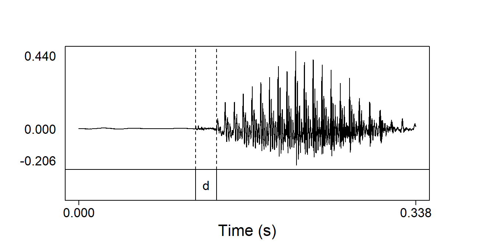
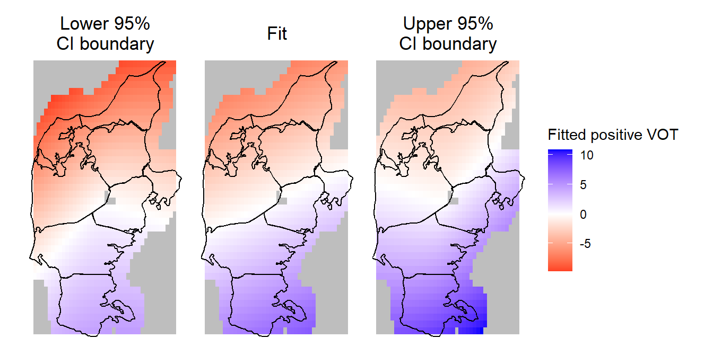

library(tidyverse)
library(patchwork)
library(eurostat)
geodata <- get_eurostat_geospatial(resolution = '1', nuts_level = 3)Variation in fine phonetic detail can modulate the outcome of sound change
The case of stop gradation and laryngeal contrast implementation in Jutland Danish
Rasmus Puggaard-Rode ![]()
Abstract
This paper provides evidence for the assumption that the precise phonetic implementation of laryngeal contrast in obstruents can have an influence on higher order linguistic structure. Traditional varieties of Jutland Danish – which are all broadly ‘aspirating’ varieties – are used as a case study. The paper shows that the precise implementation of the aspirated–unaspirated contrast in stops varied systematically in these varieties, and that this covaries with the morphophonological process of stop gradation. Stop gradation is a lenition process which is historically found in the entire Danish-speaking area, but with quite varying outcomes, which were mapped extensively by dialectologists more than a century ago. Using a large legacy corpus of sociolinguistic interviews from the 1970s, this study shows that more sonorous outcomes of stop gradation covary with higher rates of continuous closure voicing in /b d g/ and shorter aspiration in /p t k/, and vice versa for less sonorous outcomes of stop gradation.
Citation information
This manuscript has been accepted for publication in Journal of Phonetics and is in press.
What’s this?
This is a so-called ‘callout block’. They are spread throughout the manuscript, and they mostly contain software-specific technical details about how the analysis was implemented, how plots were generated etc in the R language – generally along with explanations in prose about what the individual commands do and how they work. Sometimes they just contain additional technical details. In other words, accompanying data and code which should not be part of the main text of the manuscript. Instead of placing this in a repository separate from the manuscript, this is an attempt to incorporate it directly into the paper, so that looking up technical details is as easy and simple as possible.
1 Introduction
There are many degrees of freedom in how laryngeal contrasts in obstruents are precisely realized. For example, when Lisker & Abramson (1964) first coined the term voice onset time (VOT), the available data suggested that voiceless unaspirated and aspirated stops cross-linguistically clustered into a clear bimodal distribution. However, as data from more languages has been collected, that distribution is looking increasingly like an unbroken continuum, with little indication of a cross-linguistic categorical divide between unaspirated and aspirated (Ladd 2011). Within languages with aspiration-based contrasts, the extent of closure voicing varies (e.g. Beckman, Jessen & Ringen 2013), and perturbations of fundamental frequency (F0) vary on a language-by-language basis in ways that are not immediately predictable from how the contrast is otherwise realized (e.g. Chen 2011).
It is clearly relevant for the phonetic sciences how contrasts are implemented, but it is less clear that fine-grained detail in phonetic implementation actually has an impact on higher-order linguistic structures. Many phonologists – in particular the proponents of ‘laryngeal realism’ (Honeybone 2002) – now accept that it has consequences for phonology and sound change whether a two-way laryngeal contrast in stops is managed with closure voicing or aspiration. In so-called ‘true voice languages’ like Dutch and French, phonological regressive voicing assimilation processes are more likely to be found, while in so-called ‘aspiration languages’ like German and English, progressive aspiration assimilation processes are more likely to be found (Iverson & Salmons 1995; Lombardi 1999). Similarly, debuccalization – the process whereby consonantal oral place features are lost entirely, and segments like /s/ or /p/ are reinterpreted as /h/ – seems to require a glottal spreading gesture to be present in the first place (Honeybone 2005). This begs the question whether phonological processes or sound changes are impervious to differences in laryngeal contrasts that are more fine-grained than simply voicing vs. aspiration. This paper argues that the fine phonetic detail underlying the implementation of laryngeal contrasts can play a role in sound change, and thus that phonology is at some level sensitive to detail beyond the broad descriptive features of voicing and aspiration. We argue that evidence for this is found in the variable outcomes of Danish stop gradation, and how these outcomes covary regionally with the precise phonetic implementation of laryngeal contrasts.
Stop gradation is a subset of a more general series of sound changes in Danish known as consonant gradation, which began around the year 1400 and is likely still ongoing (Brink & Lund 1975; Brink & Lund 2018). It is a historical lenition process whereby all stops reduced in weak prosodic positions, and /b d g/ in particular developed allophones that differed quite dramatically from their realization in strong prosodic positions, such as the so-called ‘soft d’ [ɤ̯] in Modern Standard Danish (Brotherton & Block 2020).1 While stop gradation in some form or other affected all parts of the Danish-speaking area, the outcomes were quite variable. This variability was already mapped extensively in the late 19th century in the dialect atlas of Bennike & Kristensen (1898–1912), and the precise morphophonological patterns have been described in various individual dialects in the structuralist era of Danish dialectology that followed. However, there has been little to no speculation previously about the causes of the variable patterns.
1 The so-called ‘soft d’ is often transcribed as [ð] in other sources (e.g. Grønnum 1998; Basbøll 2005). This is a historical relic (Schachtenhaufen 2023), and the sound is not a fricative in Modern Standard Danish (Brotherton & Block 2020). Research by Juul, Pharao & Thøgersen (2016) suggests that the [ɤ̯] notation captures the acoustics of the the ‘soft d’ well, but ongoing articulatory research suggests that it may not capture the articulation well (Puggaard-Rode & Burroni 2024); in the absence of a better solution, [ɤ̯] is used in this paper to highlight that the sound is a semivowel.
It is commonly assumed that the allophones currently found in strong prosodic positions were historically found in all positions, i.e. that /b d g/ were historically realized as stops in both strong and weak prosodic positions. In this vein, we might expect that the phonetic realization of stops in strong prosodic positions can provide a clue as to why the outcomes of stop gradation are so variable. Recent phonetic research using a legacy corpus of Danish traditional varieties has shown that the granular phonetic detail of how aspiration was implemented varied quite a bit (Puggaard 2021; Puggaard-Rode 2023a); variation such as this may be directly linked to the more categorical variation found in stop gradation patterns. This paper explores the phonetic realization of laryngeal contrast in more detail in the traditional varieties of Danish spoken in Jutland. If fine-grained detail in phonetic implementation does not impact higher-order linguistic structure, we would not expect any correlation between the variability in stop phonetics and the variability in stop gradation outcomes. However, if we do find interpretable covariation between the granular patterns in strong positions and the categorical patterns in weak positions, this is a good indication that these granular patterns can and do interact with higher-order linguistic structures.
Approximately half of the population of Denmark live on the Jutland peninsula, which shares a land border with Germany to the south; for ease of reference, Figure 1 is a map of Denmark showing the location of some of the landmarks mentioned throughout the paper. It is not straightforward to research the traditional regional varieties of Danish. In the mid-20th century, a targeted political campaign started in favor of a single national spoken standard variety based on High Copenhagen Danish, and this greatly accelerated the already waning status of the traditional dialects (see e.g. Kristiansen 1990; 2003; Pedersen 2003; Holmen 2024). By now, traditional dialects have essentially disappeared from a large part of the Danish-speaking area, having been either replaced by the spoken standard variety (which will be referred to as Modern Standard Danish throughout the paper), or with newer regional varieties which are more geographically diffuse and serve a different social function (Maegaard & Monka 2019). For this reason, this study relies on a legacy corpus of sociolinguistic interviews with speakers of traditional dialects (Arboe Andersen 1981; Goldshtein & Puggaard 2019). These recordings were made with elderly speakers in rural areas, and arguably capture a population that was minimally affected by the standardization efforts of the 20th century and spoke varieties that had developed with relatively little influence from any national standard language.
Generating the map in Figure 1
The map in Figure 1 is made in R using the packages ggplot2 and eurostat. eurostat has coordinates for the outlines a bunch of countries, which are loaded into R using the get_eurostat_geospatial() function as below. I set resolution = '1' to get the highest possible resolution. nuts_level refers to the Eurostat’s NUTS level (nomenclature of territorial units for statistics, and nope, that’s not a very satisfying abbreviation). The nuts_level determines the granularity of the regions that maps are divided into. 3 is the right granularity here – 2 would give us the official regions of Denmark, which would not allow us to easily separate Jutland from the rest of the country below.
Coordinates for specific countries can then be accessed by filtering the resulting geodata object by the country codes that are stored in geodata$CNTR_CODE. I’ll grab the data for Denmark, Germany, and Sweden, so I can also show where Denmark is located relative to the bordering countries. Each of these filtered objects will include coordinate data sorted into regions by NUTS unit. I further split the Danish coordinates into the NUTS units belonging to Jutland and those not belonging to Jutland.
geodataDK <- geodata[geodata$CNTR_CODE=='DK',]
geodataDE <- geodata[geodata$CNTR_CODE=='DE',]
geodataSE <- geodata[geodata$CNTR_CODE=='SE',]
jut_areas <- c('Sydjylland', 'Vestjylland', 'Nordjylland', 'Østjylland')
jutland <- geodataDK[geodataDK$NUTS_NAME %in% jut_areas,]
restofDK <- geodataDK[!geodataDK$NUTS_NAME %in% jut_areas,]This bit of code then generates the map. The map sets are added individually with geom_sf(), making Jutland yellow and the rest of the map light grey. Text annotations are added with annotate(), putting in proper coordinates manually, and xlim() and ylim() are set to include only Denmark (excluding the islands of Bornholm and Christiansø, which are not of interest in this study and which are quite far removed from the rest of the country). theme() options are used to remove most of the regular ggplot() junk which we don’t really need here, and also to turn the background light blue to make it clear what is and what isn’t ocean.
mapDK <- ggplot() +
geom_sf(data=jutland, fill='yellow') +
geom_sf(data=restofDK, fill='lightgrey') +
geom_sf(data=geodataDE, fill='lightgrey') +
geom_sf(data=geodataSE, fill='lightgrey') +
annotate(geom='text', x=9.5, y=57.15, label='Vendsyssel-Thy', angle=15) +
annotate(geom='text', x=9.4, y=54.7, label='Schleswig') +
annotate(geom='text', x=12.7, y=57.2, label='S W E D E N', angle=290) +
annotate(geom='label', x=12.3, y=55.4, label='Copenhagen') +
xlim(8, 13) +
ylim(54.7, 58) +
theme_bw() +
theme(panel.background=element_rect(fill='lightblue'),
panel.border=element_blank(),
panel.grid.major=element_blank(),
panel.grid.minor=element_blank(),
axis.text.y=element_blank(),
axis.text.x=element_blank(),
axis.title.y=element_blank(),
axis.title.x=element_blank(),
axis.ticks=element_blank())Code
mapDKggplot2, eurostat, and sf libraries (Wickham 2016; Lahti et al. 2017; Pebesma 2018).In Jutland, stop gradation mostly follows a straightforward geographical pattern: the categorical outcomes in the north were highly sonorous, and this sonorancy gradually decreases further to the south. In order to probe whether these categorical patterns covary with granular phonetics patterns, this paper reports two phonetic corpus studies: the first concerns variation in the duration of the aspirated release in /p t k/ (see also Puggaard 2021), and the second concerns the proportion of fully voiced /b d g/ tokens. The data is modeled with spatial generalized additive mixed models using two-dimensional smooth effects over geographical coordinates to gauge the geographical component of phonetic variability (see e.g. Wieling, Nerbonne & Baayen 2011; Wieling et al. 2014; Tavakoli et al. 2019; Koshy & Tavakoli 2022).
The results of the study reveal a remarkable degree of similarity between the variability in stop gradation described in traditional dialectology and the observed variability in the fine phonetic detail of stop realization. In brief, in the areas to the north where stop gradation had a highly sonorous outcome, the proportion of fully voiced /b d g/ tokens is also higher, and the aspirated release in /p t k/ is shorter; conversely, in the areas to the south where stop gradation had a less sonorous outcome, closure voicing is rarer in /b d g/ and the aspirated release is longer in /p t k/. In between, there is a seemingly gradual cline which also mirrors the patterns of variability in stop gradation. The gradual nature of the covariation suggests that the leniting sound changes in weak position are indeed sensitive to a degree of phonetic detail that goes beyond categorical differences such as those between ‘aspiration’ vs. ‘true voice’.
Section 1.1 below provides some general theoretical background on the relationship between (leniting) sound changes and fine phonetic detail. Section 1.2 presents the primary patterns of stop gradation in Modern Standard Danish, and shows how these patterns have been said to vary in the Danish dialectological tradition. Section 1.3 presents the research questions and hypotheses of the paper, and outline how the present study operationalizes these research questions.
1.1 Leniting sound changes and fine phonetic detail
‘Fine phonetic detail’ refers to phonetic detail beyond what is typically phonetically transcribed, or what is typically considered relevant in the description of phonological feature cues, or what is typically considered the primary cues to phonological contrast (Carlson & Hawkins 2007; Hawkins 2010). Fine phonetic detail communicates a range of social information (e.g. Foulkes & Docherty 2006), and is used in the organization of spoken interaction (e.g. Kelly & Local 1989), and much of what is labelled fine phonetic detail is clearly audible and used in speech perception (e.g. Hawkins 2003; Nguyen, Wauquier & Tuller 2009). While such detail is often explicitly ignored in abstract models of phonology, it plays a major role in exemplar models of phonology and speech perception (e.g. Pierrehumbert 2001).
It is well-known that differences in fine phonetic detail can lead to sound change. This can be categorical in nature, as in the well-known and broadly attested example of velar palatalization before front vowels, e.g. [k] → [tʃ]. Like many other such changes, this is rooted in the phonetic detail of both articulation and perception. Fine control of the tongue body is relatively limited, so dorsal consonants are generally very prone to coarticulation (Ouni 2014), and as such velars tend to be fronted before front vowels, although not nearly to the same extent as the coronal [tʃ] (Ohala 1992). However, the perceptual result of velar fronting is a release burst with broad-band noise at high frequencies, similar to the frication phase of [tʃ] (Guion 1998). The sound change follows from a combination of these articulatory and perceptual observations.
Sound change can also result from practical aspects of the communicative context. As put forward by the H&H Theory (e.g. Lindblom 1990), speakers will systematically produce clearer, more hyperarticulated speech when they judge that this is necessary for successful communication, and produce more reduced and hypoarticulated speech when the meaning is relatively contextually predictable. Over time, this can e.g. cause systematic phonological changes in lexical items that are more frequent or tend to be more contextually predictable, as predicted by exemplar models of phonology (e.g. Pierrehumbert 2001; Wedel 2006). A less obvious outcome of this mechanism is that neutralizing or leniting phonological rules strongly tend to target the ends of lexical domains (Wedel, Ussishkin & King 2019), and conversely that onset consonants tend to be stronger and onset inventories larger than their coda counterparts (Beckman 1997; Hall et al. 2018). This is because words are identified incrementally, and as such, phonetic cues early in the word are logically more crucial for word identification (Magnuson et al. 2007).
Lenition processes, whether diachronic or synchronic, can broadly be divided into sonorization and opening processes (Lass 1984). Sonorization processes include degemination and voicing; opening processes include spirantization, approximantization, debuccalization, or outright deletion (e.g. Lavoie 2001; Blevins 2004). In the various lenition trajectories proposed in the phonological literature, the logical endpoint is always deletion regardless of which precise path a segment takes (see Ewen & van der Hulst 2001; Honeybone 2008). Voiceless stops such as [p] may lenite in a sonorizing direction (developing voicing, i.e. [p] > [b]) followed by several steps of opening and eventually deletion (i.e. [b] > [v] > [w] > Ø), or they may lenite in an opening direction (spirantization, i.e. [p] > [f]), followed by the development of voicing, more steps of opening, and eventually deletion (i.e. [f] > [v] > [w] > Ø). There are multiple paths to zero, but those paths tend to converge down the line.
Although this has not been discussed much in the literature, there are good reasons why the precise details of how a laryngeal contrast is implemented could affect lenition processes. For example, intersonorant stop voicing processes are often the result of a reduced closure phase, which gives the percept of stop voicing due to the greater relative duration of voicing bleed from the preceding segment (Blevins 2004; Davidson 2016). Since the duration of voicing bleed is in itself language-specific (e.g. Beckman, Jessen & Ringen 2013; Puggaard-Rode, Horslund & Jørgensen 2022), intervocalic voicing should also be a more likely phonological process or sound change in a language where voicing bleed is relatively extensive. The extent of voicing bleed in turn depends on the nature, timing, and magnitude of glottal gestures that enforce voicelessness during the closure, which are also language-specific (compare e.g. the studies of English and Danish by Hirose & Gay 1972; Hutters 1985).
1.2 Stop gradation
In Danish phonology, ‘strong’ prosodic positions are onsets before a full vowel, and weak prosodic positions are either onsets before neutral vowels, or codas, including word-final codas (e.g. Rischel 1970). Neutral vowels are schwa [ə] and its r-colored counterpart [ɐ] (see Heger 1975), as well as [i] in select suffixes. Syllables with neutral vowels are never stressed, and the schwas were historically full vowels which weakened in unstressed positions; this development (known as ‘infortis weakening’) precedes stop gradation by at least a few centuries (Skautrup 1944–1970). Syllables with full vowels can be either stressed or unstressed. There is no direct relationship between the strong/weak distinction and stress, as evidenced by the fact that coda positions in stressed syllables with full vowels are treated as weak. According to Rischel’s (1970) distributional analysis of Danish consonants, most consonant phonemes take different allophones in strong and weak position (see also Basbøll 2005; Grønnum 2005). As we will see in Section 1.2.2 below, some dialects treat codas and ‘weak onsets’ differently.
Section 1.2.1 gives a brief overview of the relevant stop gradation patterns in Modern Standard Danish. Subsequently, Section 1.2.2 covers the variable outcomes of stop gradation in the traditional varieties of Danish spoken in Jutland.
1.2.1 Stop gradation in Modern Standard Danish
In Modern Standard Danish, there are no voiced obstruents in strong position (Fischer-Jørgensen 1954; Puggaard-Rode, Horslund & Jørgensen 2022). The laryngeal contrast between the two stop series /b d g/ and /p t k/ is primarily regulated through differences in the timing and magnitude of laryngeal gestures (Hutters 1985), and the presence or absence of aspiration or affrication noise (Fischer-Jørgensen 1972a). /b d g/ are unaspirated [p t k], and there is evidence that the voicelessness is actively enforced with a small glottal spreading gesture (Fischer-Jørgensen & Hirose 1974; Hutters 1984; 1985; Puggaard-Rode, Horslund & Jørgensen 2022). /p t k/ are aspirated [pʰ tʰ kʰ]. A common phonological analysis of Danish consonants holds that /p t k/ deaspirate in weak position, while /b d g/ select a variety of semivocalic allophones which often differ radically from their strong counterparts (e.g. Rischel 1970; Basbøll 2005; Grønnum 2005). These patterns are summarized in (1), where WP is short for weak position and SP is short for strong position.2
2 Note that stop gradation does not consistently apply for /b/; gradation in (1b) only affects select lexical items, and there is great stylistic and interspeaker variability in which and how many lexical items are affected. However, there are several indications from dialectology and beyond that stop gradation in /b/ used to be more widespread in earlier stages of the language (e.g. Jørgensen 2021).
Code
#This is admittedly a nuts way of typesetting a linguistic example,
#but I much prefer how the end result looks to Quarto's Markdown table formatting
i <- i+1
grad <- data.frame(a=c(paste0('(', i, ')'), rep('', 9)),
b=c('a.', '', 'b.', '', 'c.', '', 'd.', '', '', ''),
c=c('/p t k/', '', '/b/', '', '/d/', '', '/g/', '', '', ''),
d=c('→', '', '→', '', '→', '', '→', '', '', ''),
e=c('[pʰ tʰ kʰ]', '[p t k]', '[p]', '[p ~ ʊ̯]', '[t]',
'[ɤ̯]', '[k]',
'[ɪ̯]', '[ʊ̯]', 'Ø'),
f=rep('/', 10),
g=c('SP', 'WP', 'SP', 'WP', 'SP', 'WP', 'SP',
'WP, _ [-back, -high]', 'WP, _ [+back, -high]',
'WP, _ [+high]'))
colnames(grad) <- NULL
grad| (1) | a. | /p t k/ | → | [pʰ tʰ kʰ] | / | SP |
| [p t k] | / | WP | ||||
| b. | /b/ | → | [p] | / | SP | |
| [p ~ ʊ̯] | / | WP | ||||
| c. | /d/ | → | [t] | / | SP | |
| [ɤ̯] | / | WP | ||||
| d. | /g/ | → | [k] | / | SP | |
| [ɪ̯] | / | WP, _ [-back, -high] | ||||
| [ʊ̯] | / | WP, _ [+back, -high] | ||||
| Ø | / | WP, _ [+high] |
Evidence in favor of this phonological analysis comes from alternations such as those in (2), which are typically due to stress shifting suffixes (2a, 2c) or suffixes that create coda obstruent clusters, where strong allophones are also used (2b, 2d).
Code
i <- i+1
ex <- data.frame(a=c(paste0('(', i, ')'), rep('', 8)),
b=c('a.', '', 'b.', '', 'c.', '', 'd.', '', ''),
c=c('*skalp*', '*skalpere*',
'*købe*', '*købte*',
'*valid*', '*validere*',
'*bage*', '*bagværk*', '*bagt*'),
d=c("'scalp' (n.)", "'scalp' (v.)",
"'buy'", "'bought'",
"'valid'", "'validate'",
"'bake'", "'baked goods'", "'baked'"),
e=c('[skælˀp]', '[skælˈpʰeːˀɐ]',
'[ˈkʰøːøp ~ ˈkʰøːʊ]', '[ˈkʰøptə]',
'[ʋæˈliɤ̯ˀ]', '[ʋæliˈteːˀɐ]',
'[ˈpæːɪ]', '[ˈpɑʊ̯ʋæɐ̯k]', '[pɑkt]'))
colnames(ex) <- NULL
ex| (2) | a. | skalp | ‘scalp’ (n.) | [skælˀp] |
| skalpere | ‘scalp’ (v.) | [skælˈpʰeːˀɐ] | ||
| b. | købe | ‘buy’ | [ˈkʰøːøp ~ ˈkʰøːʊ] | |
| købte | ‘bought’ | [ˈkʰøptə] | ||
| c. | valid | ‘valid’ | [ʋæˈliɤ̯ˀ] | |
| validere | ‘validate’ | [ʋæliˈteːˀɐ] | ||
| d. | bage | ‘bake’ | [ˈpæːɪ] | |
| bagværk | ‘baked goods’ | [ˈpɑʊ̯ʋæɐ̯k] | ||
| bagt | ‘baked’ | [pɑkt] |
More detail on these phonological alternations can be found in Horslund, Puggaard-Rode & Jørgensen (2022) and Puggaard-Rode (2023b), who argue on multiple grounds that part of the traditional analysis in (1) should be thought of as a diachronic description rather than a phonological analysis with any synchronic validity. As we will see below, the differences between strong and weak ‘stop allophones’ in the traditional Jutland Danish varieties are rather less dramatic than in Modern Standard Danish. In Section 4.3, we return to the broader theoretical implications of the discrepancy between ‘allophone’ transparency in different dialects in light of the results of this study.
1.2.2 Stop gradation in traditional Jutland Danish varieties
There is a strong tradition of dialectology in Danish linguistics going back to at least the late 19th century. This tradition has led to highly detailed descriptions of the morphophonology of many regional varieties of Danish (Hovdhaugen et al. 2000). Since the dialectological tradition has largely been couched in the glossematic branch of structural linguistics, which was explicitly uninterested in details of phonetic implementation (Hjelmslev 1943), the categorical morphophonology of traditional regional varieties is much better described than their phonetics. Stop gradation is one such well-described morphophonological process. The various patterns of stop gradation were mapped in quite some detail in the dialect atlas by Bennike & Kristensen (1898–1912).3
3 As with most other dialect atlases of that time, these maps suggest hard categorical boundaries between isoglosses; this probably does not reflect reality, where we would rather expect smooth, gradual regional transitions (Chambers & Trudgill 1998).
While stop gradation was highly variable throughout the Danish-speaking area, the variability on the Jutland peninsula was more systematic than in other areas. This is especially true for the weak ‘allophones’ of /b/ and /g/.
In the case of /b/ (see Figure 2), stop gradation resulted in a bilabial approximant [β] in the northernmost part of Jutland, specifically in the area of Vendsyssel–Thy which is separated from the peninsula proper by the Limfjord (see Figure 1). The bulk of the central part of the peninsula has a voiced fricative [v], except for a small relic area towards the east where /b/ did not lenite. Further south, [v] emerged in medial position only, and [f] emerged in absolute final position; this is likely due to the cross-linguistically common pattern is final obstruent devoicing, which is discussed further below. Furthest south, [f] emerged across the board.4 These varying alternations have a significant impact on the varieties’ phonology, as lenition to [β] or [v] would cause positional neutralization between /b v/, while lenition to [f] would cause positional neutralization between /b f/.
4 Figure 2 only shows present-day Denmark, but the traditional Danish-speaking area covered by Bennike and Kristensen extended further down into present-day Schleswig–Holstein in Germany. This means that the Danish-speaking area which developed [f] is somewhat larger than shown in Figure 2; this also holds true for Figure 3 and Figure 4 below.

The variation patterns of /g/ (see Figure 3) were very similar. In a somewhat smaller part of Northern Jutland roughly corresponding to the traditional area of Vendsyssel, stop gradation resulted in a voiced fricative [ɣ] which alternated with a semivowel [ɪ̯] after front vowels.5 Otherwise, [ɣ] was the outcome of stop gradation throughout most of the peninsula, except in the south. Here, we find a pattern similar to the outcomes for /b/, where one area to the south developed [ɣ] medially and [x] in absolute final position, and the area furthest to the south including part of present-day Germany developed [x] across the board.
5 This ‘voiced fricative’ may well have been an approximant; Bennike and Kristensen and most later Danish dialectologists use a local precursor to the International Phonetic Alphabet called Dania (Jespersen 1890), and this transcription system does not systematically distinguish between voiced fricatives and approximants. Accordingly, some transcriptions used here such as [β ɣ] are ‘translated’ from their Dania counterparts [ƀ q].
Taken together, the outcomes of stop gradation in /b g/ suggest that the phonological context (i.e. strong vs. weak position) modulates aperture in the phonological stops almost invariably throughout the peninsula, while geography further modulates the degree of sonorization that the phonological stops undergo. The similarities between /b g/ are not surprising, as stops often display phonetic class behavior within phonological categories (e.g. Chodroff & Wilson 2017; Chodroff, Golden & Wilson 2019). The maps show a geographical sonority cline with increasingly sonorous outcomes of stop gradation moving south–north. These patterns suggest that /b g/ in weak positions have developed further along the lenition trajectories in the north than in the south. They also suggest that the laryngeal contrast in the south is not voicing-based, as a leniting change of the type [b] > [f] would be very unlikely; no such assumption can be made about the northern varieties.
It is worth discussing whether the allophones [f x] are not in fact a result of stop gradation, but rather the outcome of final devoicing. In this scenario, the outcome of stop gradation would have been [β ɣ], and a subsequent, unrelated development would have devoiced these fricatives, yielding [f x]. One fact that superficially speaks in favor of this is the effect of ‘infortis weakening’ in Jutland; infortis weakening, which was mentioned in the previous section, refers to the development of schwa from full vowels in unstressed syllables. In Jutland, infortis weakening further led to the loss of schwa in word-final position (Skautrup 1944–1970); as a result, the proportion of weak positions which are word-final codas is higher in Jutlandic varieties than in Modern Standard Danish. However, this was the case throughout Jutland, so it cannot explain the variation seen in Figure 2 and Figure 3. Weak positions could still refer to either codas or onsets in the traditional dialects of Jutland, so final devoicing can also not explain why weak allophones are consistently voiceless in the southernmost dialects. Overall, final devoicing has low explanatory value in this case, except for those dialects where [f x] are only found finally. We return to this in the discussion.
The patterns for /d/ (see Figure 4) are much less clear. Here, the outcomes of stop gradation were seemingly highly sonorous throughout Jutland, but the particular sonorant consonant varied.6 As above, it is difficult to judge exactly what [ð] refers to in the Dania transcriptions used by traditional dialectologists; we have little reason to believe that it was a fricative, but it may not have been quite as semivocalic as the Modern Standard Danish ‘soft d’. Recall however that complete elision, as found in the northernmost part of the peninsula (i.e. Vendsyssel), is the logical endpoint of any lenition trajectory; the original map also carves out a small area below Vendsyssel in northern Jutland where the outcome of stop gradation was a ‘weakened [ð] which often elides in coda’ (Bennike & Kristensen 1898–1912: K.50, author’s translation).

In spite of /d/ having quite different lenition trajectories than /b g/, coronal stops are not excluded from the phonetic studies below. It is unlikely that the different lenition trajectories are due to differences in laryngeal behavior between /d/ and /b g/; these differences are likely because /d/ is coronal. It is quite common for coronals to show peculiar phonological behavior (see Hall 1997), including in lenition processes (see e.g. Grijzenhout 1995).
1.3 Research questions and hypotheses
In this study, we are primarily interested in the following question: are sound changes and phonological processes sensitive to the phonetic details of laryngeal contrast beyond broad descriptive features like aspiration vs. voicing? We operationalize this question by comparing the well-documented geographically variable outcomes of stop gradation in Jutland with geographical variation in the fine phonetic detail of stop realization, in particular the implementation of the laryngeal contrast.
The hypotheses outlined below follow the assumption that stop gradation is a result of the general tendency for phonological rules that result in lenition or neutralization to affect codas and word endings (see Section 1.1). This has almost invariably led to an increase in aperture in the various traditional varieties of Danish, but the precise outcome of stop gradation is affected by how precisely the laryngeal contrasts in individual varieties were realized. If this assumption is true, we expect to find that the decrease in sonority in weak reflexes in Jutland moving north–south is mirrored by a decrease in phonetic stop ‘sonority’ in strong position in Jutland moving in a north–south direction, where ‘phonetic sonority’ refers to a level of fine phonetic detail that traditional Danish dialectologists were either unable to capture or were explicitly uninterested in.
/b d g/ were the historical sources of the allophones discussed above, but we can learn more about variability in the phonological systems by looking at how the phonetic implementation of the laryngeal contrast varies at large rather than just how /b d g/ vary. We operationalize the above notion of ‘phonetic sonority’ as differences in the duration of aspirated releases in /p t k/, i.e. differences in positive VOT, and differences in closure voicing patterns in /b d g/. We pose the following concrete research questions:
Does the duration of the aspirated release of /p t k/ show meaningful patterns of geographical variation that correspond to the variable outcomes of stop gradation? The research hypothesis, which we will call the Aspiration Hypothesis, is that the duration of aspiration varies geographically, such that it is relatively long in the south and shortens with increasing latitude.
Do closure voicing rates in /b d g/ show meaningful patterns of geographical variation that correspond to the variable outcomes of stop gradation? The research hypothesis, which we will call the Voicing Hypothesis, is that the occurrence of closure voicing varies geographically, such that voicing is relatively common in the north, and decreasingly common with decreasing latitude.
The Aspiration Hypothesis and the Voicing Hypothesis follow from the principles and assumptions laid out in Section 1.1. If support is found for these hypotheses, this suggests 1) that the variable outcomes of stop gradation in Jutland Danish are the result of differences in fine phonetic detail at the laryngeal level, and accordingly 2) that the precise implementation details of a laryngeal contrast can have an impact on higher-order processes such as phonological change. While keeping in mind that correlation does not equal causation, it is motivated at length in the preceding sections why a potential correlation between stop gradation and stop phonetics would be meaningful.
The statistical models of aspiration duration and closure voicing rates probe the influence of geography on phonetic implementation, but they also include a wide range of other predictor variables (phonetic contextual and otherwise) which are known to or expected to influence aspiration duration and voicing rates. These variables are not related to the primary hypotheses of the study, but the results may nevertheless be of general interest for developing models of how aspiration duration and voicing rates covary with their phonetic environment. For this reason, the predictor variables are introduced in some detail in Section 2.3 and discussed in some detail in Section 4.1; readers who are primarily interested in the Aspiration Hypothesis and Voicing Hypothesis as posed above can safely skip these sections.
The structure of the rest of the paper is as follows: Section 2 presents the corpus used in the study, describes the acoustic analysis procedures, discusses the various predictor variables in detail, and presents the statistical methodology. Section 3 presents the results of the statistical models, and Section 4 discusses the results in light of the theory and research questions presented in this and previous sections, including a discussion of how the situation in the Jutlandic varieties relates to the situation in Modern Standard Danish.
2 Methods and materials
2.1 The corpus
As mentioned in Section 1, the Danish dialect landscape has been drastically transformed over the course of the past century, and in large parts of the country it would no longer be possible to find speakers of the traditional dialects. For this reason, this study makes use of a legacy corpus of sociolinguistic recordings with mostly elderly dialect speakers. The corpus consists of tape recordings that were collected during a five-year collaborative project by the Peter Skautrup Center for Jutlandic Dialect Research and the Department of Dialect Research at the University of Copenhagen from 1971–1976 (Arboe Andersen 1981; Pedersen 1983; Goldshtein & Puggaard 2019; Puggaard-Rode 2023b: 214ff.). The project aimed at recording speakers from every fourth parish in the country, and almost achieved this goal, resulting in 525 sociolinguistic interviews with elderly rural informants who were specifically chosen for their dialect ‘purity’.7 The project had two main goals: to document traditional varieties which were quickly losing ground for posterity, and to gather materials for ongoing dialect dictionary projects. Phonetic research did not factor into the considerations, and little effort was made to avoid e.g. background noise and overlap. The corpus adds up to around 370 hours of speech data, and the original tape recordings have all been digitally restored by the Royal Danish Library and are freely available online in high quality.8 The existence of this corpus is the only reason why this study is possible. The geographical distribution of participants is shown in Figure 5. The coverage is quite good and relatively evenly spread except for a sparsity of recordings around the center of the peninsula.
7 See Goldshtein & Ahlgren (2021) for a critical discussion of the notion of dialect purity and how this affected the interviews.
8 Recordings can be accessed via this URL: dansklyd.statsbiblioteket.dk/samling/dialektsamlingen/. More metadata and information about how to access the specific recordings used in this study can be found in this paper’s accompanying data and code.
Generating the map in Figure 5
In order to generate the map in Figure 5, we first load in two data frames, one containing all the analysis data and one containing coordinate data to generate polygons based on the primary Jutlandic dialect areas (see Skautrup et al. 1970–; Puggaard 2021). We’ll have a closer look at the structure of the analysis data in df at a later point.
df <- read.csv('data/vot_voi.csv', sep=';')
dia_polygon <- read.csv('data/polygons_dialectareas.csv', sep=';')Next, we grab the unique coordinates for individual speakers from df.
locs <- data.frame(lat = unique(df$lat),
lon = unique(df$long))The map is then generated with this ggplot call:
locs_map <- ggplot(locs) +
aes(x=lon, y=lat) +
geom_polygon(data=dia_polygon, aes(x=lat, y=long, group=dialect),
fill=NA, color='grey', lwd=0.6) +
coord_fixed(1.7) +
geom_point(size=2.5, alpha=0.5, col='red') +
theme(panel.border = element_blank(),
panel.background = element_rect(fill = "#FFFFFF", color = "#FFFFFF"),
axis.text.y = element_blank(), axis.text.x = element_blank(),
axis.title.y = element_blank(), axis.title.x = element_blank(),
axis.ticks = element_blank(), legend.background = element_blank(),
legend.title = element_blank(), legend.text = element_blank())Code
locs_mapggplot2 library (Wickham 2016).A little less than half of the recordings in the corpus are from Jutland. This study makes use of recordings from 213 different parishes in Jutland, excluding only recordings which are uncharacteristically short, recordings where the audio quality is uncharacteristically poor, or recordings of group interviews. In the few cases where multiple recordings were made in the same parish, one recording was selected on the basis of audio quality. When interviews were spread across multiple tapes, the second one was used, since the flow of speech tends to become more natural as the recording progresses and informants get used to the presence of the recording device.
The mean age of participants at the time of recording was 77.4 years, excluding 13 participants for whom the age is not known; 49 of the 213 informants were women. This is obviously a fairly age-biased population, and deliberately so. Age is known to affect temporal characteristics of speech including positive VOT, such that elderly speakers generally have slower speech, but (usually) shorter positive VOT (Smith, Wasowicz & Preston 1987; Larson, Hayslip & Thomas 1992; Torre & Barlow 2009).9 Age is unlikely to affect the main conclusions drawn from the study, as all participants were more or less elderly at the time of recording. However, the age bias does mean that one should be careful comparing the exact VOT values reported here to the results of studies without a similar age bias.
9 This relationship between age and positive VOT is particularly clear for male speakers (Torre & Barlow 2009), and particularly clear in /p t/, whereas the results for /k/ are mixed.
The corpus is especially suitable for our purposes, since most of the speakers were born in the last few decades of the 19th century, making them more or less the same generation as the informants for Bennike and Kristensen’s (1898–1912) dialect atlas; Bennike and Kristensen were teachers at a højskole (a Danish boarding school for young adults) and their informants were pupils at the school. Although this does not make the speakers recorded in the 1970s perfect representatives of the dialect landscape in the late 19th century – there are multiple studies showing that speakers do change their speech patterns throughout the lifespan (e.g. Harrington, Palethorpe & Watson 2000; Sankoff & Blondeau 2007; Kang & Han 2013) – Labov (1994) does convincingly argue for the usefulness of apparent-time data, and the choice of particularly conservative informants for the corpus likely means that the corpus provides a decent snapshot of the speech patterns from that particular generation of Jutland Danish speakers.
2.2 Token selection and acoustic analysis
A large number of stop tokens were extracted from the corpus presented in the previous subsection. The vast majority of the recordings in the corpus have not been transcribed, and the few existing transcriptions are fully analog and not particularly helpful for phonetic analysis (Goldshtein & Puggaard 2019). As such, the first analysis step was to listen through (parts of) recordings to determine the locations of stops. Since this is a very time-demanding task, this puts a natural limit on the number of tokens that could be included in the study, and there are many more stops in the corpus than those used in the present study.
The selection of tokens followed these criteria: Tokens of /p t k/ were included only if they were in simple onset or followed by the palatal glide [j]; /Cj/ clusters were included since it was often difficult to determine whether the glide was a separate segment or the result of phonological palatalization. Tokens were excluded if a stop release could not be clearly delimited. The first 50 tokens from each recording that matched these criteria were included in the study.
Due to the great variability in phonetic implementation, aspiration-related landmarks were segmented manually in Praat (Boersma & Weenink 2021). The duration of the aspirated release, i.e. positive VOT, is defined as the time differential between the stop release and the onset of voicing (Lisker & Abramson 1964). The acoustic landmark used to identify the stop release was a sudden increase in amplitude after a period of relative silence (corresponding to the stop closure). This is determined from the waveform rather than the spectrogram due to the higher temporal accuracy of the waveform (following Abramson & Whalen 2017). Whenever multiple bursts were present, the final one was segmented, following Cho & Ladefoged (1999: 215); this phenomenon is fairly common in the recordings, likely due to the speakers’ age (Parveen & Goberman 2012).10 The landmark used to represent the onset of voicing was the first zero-crossing preceding the onset of periodicity in the waveform, which Francis, Ciocca & Yu (2003) identifies as the landmark most closely corresponding to physiological measures of voicing onset. Figure 6 shows an example of annotated aspiration landmarks in a fairly straightforward /t/ token, and in a /k/ token with two bursts. The VOT measurements of /p t k/ are identical to those reported by Puggaard (2021) and included in that paper’s accompanying data.
10 This choice may have a non-trivial influence on the resulting measurements (Gráczi & Kohári 2014), but since there are no indications that the presence of multiple bursts varies regionally, it should not affect how the results are interpreted.
Code
library(praatpicture)
praatpicture('snd/asp_annot.wav', tg_tierNames=FALSE,
frames=c('sound', 'TextGrid'), proportion=c(80,20), ps=20,
tg_focusTierLineType='dashed')
praatpicture('snd/asp_annot_multiburst.wav', tg_tierNames=FALSE, tg_tiers=2,
frames=c('sound', 'TextGrid'), proportion=c(80,20), ps=20,
tg_focusTierLineType='dashed')praatpicture library (Puggaard-Rode 2024).Tokens of /b d g/ were also included only if they were in simple onset or followed by [j]. Function words were excluded unless they were stressed or post-pausal, and the extremely frequent function word det ‘it, that’ was excluded across the board. In each recording, all instances of /b d g/ that met these criteria (and at least impressionistically sounded like stops) were included in the analysis up to the point where the 50th instance of /p t k/ had been found.
For each token of /b d g/, it was determined whether or not it was fully voiced. In post-pausal position, stops were considered fully voiced if prevoicing, i.e. periodicity prior to the release, was present. As with the landmarks for aspirated releases, this was determined on the basis of the waveform. The initiation of pre-voicing in post-pausal position generally requires articulatory adjustment above the glottis even if the vocal folds are positioned in a way that is amenable to voicing (Solé 2018); recall from Section 1.2.1 that the vocal folds are usually lightly spread during the closure in Modern Standard Danish /b d g/. In other positions, stops were considered fully voiced if voicing (i.e. periodicity) was continuous throughout the closure. In intersonorant position, voicing will naturally continue throughout most of the closure without any articulatory adjustment due to the high transglottal pressure differential following a sonorant (Westbury & Keating 1986); in Modern Standard Danish, the glottal spreading gesture during /b d g/ usually counteracts this (Hutters 1985; Puggaard-Rode, Horslund & Jørgensen 2022).
This dichotomy between fully voiced and not fully voiced follows the study of Modern Standard Danish by Puggaard-Rode, Horslund & Jørgensen (2022). It is fairly common for studies to report categorical measures of voicing (see e.g. Davidson 2016; Sonderegger et al. 2020; Tanner, Sonderegger & Stuart-Smith 2020), although often including a distinction between fully voiceless and partially voiced stops. These two categories are collapsed in this study, primarily for the three following reasons: 1) It is much more difficult to statistically model multi-valued categorical dependent variables than binary ones; 2) stops are essentially never fully voiceless intervocalically (e.g. Shih, Möbius & Narasimhan 1999), and at least in this data, they are very rarely partially voiced in absolute initial position. Blevins, Egurtzegi & Ullrich (2020) use the autocorrelation coefficient in windowed portions of the signal to estimate a proportional measure of voicing probability. We opt against this here, because it is impossible to annotate stop closures consistently when some tokens are post-pausal without pre-voicing; without annotated closures, it would have to be determined on an ad hoc basis where such measures are taken. Another potential continuous measure is the duration of pre-voicing, i.e. negative VOT, but this is not a particularly meaningful measure in medial position. A binary voicing decision arguably captures well whether there is an articulatory target for active devoicing in medial stops (as in Modern Standard Danish), and whether there is an articulatory target for active voicing in post-pausal stops.
In order to cross-validate the binary voicing decision, we used the epoch detection and pitch tracking software reaper (Talkin 2015) to estimate the proportion of 5 ms frames that are voiced in the 100 ms prior to the stop release. Using this voicing proportion measure, we can predict the binary voicing decision with approx. 78.5% accuracy.11 While this is of course a very rough measure of voicing proportion leading up to the release, and cannot be taken as a gold standard, the high correlation between the two measures is reassuring. The voicing proportion measure is not used further in the statistical modeling of the paper, but is shared along with the accompanying data and code for the paper.
11 We arrived at this number by iteratively fitting 100 simple logistic regression models on different subsets of the data with the binary voicing decision as the dependent variable, and the reaper-estimated voicing proportion leading up to the release as the independent variable. Each model used a random 80% subset of the data for training and a random 20% subset for validation; during validation, these models predict the correct binary voicing decision label with a mean accuracy of 78.5%.
Cross-validating the binary voicing decision
While the first steps of this code can only be run when you have the raw dialect recordings stored in the correct format, I’ll show how it in the interest of transparency. For this step of the analysis, the corpus is stored as an EMU database (see this introduction for more information) and the R package emuR was used to interface with the database.
library(emuR)I load the database and query all annotations on the negsg tier starting with either b|d|g, i.e. find all annotated instances of /b d g/. I store the results of this query as the data frame sl, and add a column voi_prop for voicing proportions. sl will have information about the file name and time stamps of each token.
db <- load_emuDB('PSC_emuDB')
sl <- query(db, 'negsg =~ b | d | g')
sl$voi_prop <- NAThe signal processing is done in a large for-loop. I use the information in sl to find the file name corresponding to each token. Using the tuneR library, I load in the 100 ms snippet of the sound file immediately preceding the stop release plus 50 ms before and after to avoid any windowing artefacts (using the readWave() function). I combine the channels of the resulting stereo sound file, and save the short snippet using the writeWave() function.
I then use R to interface with the command line using the system() function; this is used to call the reaper software with the following command:
wsl ~/bin/reaper -i snippet.wav -f tmp.f0 -awsl ~/bin/reaper will access reaper through the Linux distribution of a Windows computer (which is where I have it installed), -i snippet.wav specifies the sound file to be analyzed (which we just saved), -f tmp.f0 specifies the name of the output file, and -a tells the program to output the file in a human-readable ASCII format. This’ll of course only work if you’re on a Windows computer with a WSL Linux distribution installed, and you’ve already installed reaper and placed it in the bin directory of your Linux distribution.
The resulting file is read in using the read_file() function from the tidyverse, and converted to a data frame by removing the first few lines and using the read_delim() function on the resulting object. Finally, we take the sum of voicing decisions in each of the 5 ms frames of the 100 ms window of interest, and remove the files that were saved along the way.
library(tuneR)
for (i in 1:nrow(sl)) {
fn <- paste0(db$basePath, '_0000_ses', sl$bundle[i],
'_bndl/', sl$bundle[i], '.wav')
snippet <- readWave(fn, from = (sl$start[i] - 150) / 1000,
to = (sl$start[i] + 150) / 1000, units='seconds')
snippet@left <- round((snippet@left + snippet@right) / 2, 0)
snippet <- channel(snippet, 'left')
writeWave(snippet, 'snippet.wav')
reaper_call <- paste('wsl ~/bin/reaper -i', 'snippet.wav',
'-f', 'tmp.f0', '-a')
system(reaper_call)
f0_file <- read_file('tmp.f0')
f0est <- unlist(strsplit(f0_file, 'EST_Header_End\\n'))[2]
f0est <- suppressMessages(read_delim(f0est))
colnames(f0est) <- c('time', 'voiced', 'f0')
sl$voi_prop[i] <- sum(f0est[11:30,'voiced']) / 20
unlink('tmp.f0')
unlink('snippet.wav')
}In the file data/bdg_voiprop.Rda these decisions have combined with a data frame containing the other information about /b d g/ that we model below.
load('data/bdg_voiprop.Rda')Below, we add a column with binary values voival with 1s for tokens that were manually determined to be voiced and 0s for tokens that were manually determined to be voiceless. p80 is the number of rows to include in an 80% training subset of the data, and p20 is the number of rows to include in a 20% validation subset.
bdg <- bdg %>% mutate(voival = voi=='voi')
p80 <- round(nrow(bdg) * 0.8)
p20 <- round(nrow(bdg) * 0.2)We assign an empty vector called accuracy, and then iterate 100 times a procedure where we use slice_sample() to generate random training and validation subsets of the data. glm is used to predict the manual voicing label from the voicing proportion, and predict() is then used with the validation subset. In each iteration of the loop, we store the accuracy of the model’s predictions.
accuracy <- c()
for (i in 1:100) {
sample_fit <- bdg %>% slice_sample(n=p80)
sample_test <- bdg %>% slice_sample(n=p20)
mod <- glm(voival ~ voi_prop, data=sample_fit, family=binomial(link='logit'))
sample_test$pred <- predict(mod, sample_test, type='response')
sample_test$pred <- ifelse(sample_test$pred > 0.5, 'voi', '')
accuracy[i] <- sum(sample_test$pred == sample_test$voi) / p20
}The mean accuracy is around 78.5%.
mean(accuracy)[1] 0.7831729Figure 7 gives examples of post-pausal and intersonorant /b d g/ that are either fully voiced or not fully voiced. As with Figure 6 above, only waveforms are shown, since the decision was made on the basis of the waveform.
Code
praatpicture('snd/int_fv.wav', tg_tierNames=FALSE,
frames=c('sound', 'TextGrid'), proportion=c(80,20), ps=20,
tg_focusTierLineType='dashed')
praatpicture('snd/int_nfv.wav', tg_tierNames=FALSE,
frames=c('sound', 'TextGrid'), proportion=c(80,20), ps=20,
tg_focusTierLineType='dashed')
praatpicture('snd/pp_fv.wav', tg_tierNames=FALSE,
frames=c('sound', 'TextGrid'), proportion=c(80,20), ps=20,
tg_focusTierLineType='dashed')
praatpicture('snd/pp_nfv.wav', tg_tierNames=FALSE,
frames=c('sound', 'TextGrid'), proportion=c(80,20), ps=20,
tg_focusTierLineType='dashed')
praatpicture library (Puggaard-Rode 2024).The number of measured tokens by place of articulation and laryngeal category is given in Table 1;12 the relative rarity of /p/ tokens reflects a general pattern in the Danish lexicon (see e.g. Hansen 1962–1971: II:165ff.).
12 This paper’s accompanying data and code also contains plots giving the number of tokens by phoneme for each of the predictors included in the statistical models.
Code
bdg <- df %>% filter(sg == 'negsg')
bdg_token_no <- bdg %>%
filter(sg == 'negsg') %>%
group_by(stop) %>%
summarize('Number of tokens' = formatC(n(), big.mark=',')) %>%
mutate(Phoneme = paste0('/', stop, '/'),
.before='Number of tokens', .keep='unused') %>%
rbind(c('/b d g/ total', formatC(nrow(bdg), big.mark=',')))
ptk <- df %>% filter(sg == 'possg')
ptk %>%
mutate(stop = fct_relevel(stop, 't')) %>%
mutate(stop = fct_relevel(stop, 'p')) %>%
group_by(stop) %>%
summarize('Number of tokens' = formatC(n(), big.mark=',')) %>%
mutate(Phoneme = paste0('/', stop, '/'),
.before='Number of tokens', .keep='unused') %>%
rbind(c('/p t k/ total', formatC(nrow(ptk), big.mark=',')),
bdg_token_no)| Phoneme | Number of tokens |
|---|---|
| /p/ | 1,386 |
| /t/ | 5,169 |
| /k/ | 4,095 |
| /p t k/ total | 10,650 |
| /b/ | 2,212 |
| /d/ | 2,369 |
| /g/ | 2,273 |
| /b d g/ total | 6,854 |
Data preprocessing and a look at the data frame
The raw data used for this study is very similar to that used by Puggaard (2021) which is hosted online in the DataverseNL repository. The main difference is that this version has a few more columns containing information about presence or absence of closure voicing and prosodic boundaries.
The data frame has the following columns:
Code
colnames(df) [1] "num" "parish" "parishno" "tape_id" "birthyear" "gender"
[7] "year" "dialect" "sg" "voi" "boundary" "token"
[13] "dur" "pal" "height" "backness" "bkn2l" "rdness"
[19] "stop" "str" "long" "lat" "rec_age" Here is a quick overview of what these columns contain:
Code
dplyr::glimpse(df)Rows: 17,504
Columns: 23
$ num <int> 1, 2, 3, 4, 5, 6, 7, 8, 9, 10, 11, 12, 13, 14, 15, 16, 17, 1…
$ parish <chr> "Agerskov", "Agerskov", "Agerskov", "Agerskov", "Agerskov", …
$ parishno <int> 3074, 3074, 3074, 3074, 3074, 3074, 3074, 3074, 3074, 3074, …
$ tape_id <int> 395, 395, 395, 395, 395, 395, 395, 395, 395, 395, 395, 395, …
$ birthyear <int> 1883, 1883, 1883, 1883, 1883, 1883, 1883, 1883, 1883, 1883, …
$ gender <chr> "male", "male", "male", "male", "male", "male", "male", "mal…
$ year <int> 1972, 1972, 1972, 1972, 1972, 1972, 1972, 1972, 1972, 1972, …
$ dialect <chr> "S\xf8n", "S\xf8n", "S\xf8n", "S\xf8n", "S\xf8n", "S\xf8n", …
$ sg <chr> "negsg", "negsg", "negsg", "negsg", "negsg", "negsg", "negsg…
$ voi <chr> "", "", "", "", "", "", "", "", "", "voi", "voi", "voi", "",…
$ boundary <chr> "y", "", "y", "", "", "", "", "", "y", "", "", "", "", "", "…
$ token <chr> "da1", "ba2", "da1", "gar2", "gar2", "dar1", "ba2", "gi1", "…
$ dur <dbl> 18.1, 13.9, 23.9, 24.4, 22.4, 8.2, 6.3, 15.5, 21.0, 20.0, 6.…
$ pal <chr> "negpal", "negpal", "negpal", "negpal", "negpal", "negpal", …
$ height <chr> "low", "low", "low", "low", "low", "low", "low", "high", "hi…
$ backness <chr> "front", "front", "front", "central", "central", "central", …
$ bkn2l <chr> "nbk", "nbk", "nbk", "nbk", "nbk", "nbk", "nbk", "nbk", "nbk…
$ rdness <chr> "negrd", "negrd", "negrd", "negrd", "negrd", "negrd", "negrd…
$ stop <chr> "d", "b", "d", "g", "g", "d", "b", "g", "d", "g", "d", "g", …
$ str <chr> "negstr", "str", "negstr", "str", "str", "negstr", "str", "n…
$ long <dbl> 9.129243, 9.129243, 9.129243, 9.129243, 9.129243, 9.129243, …
$ lat <dbl> 55.12875, 55.12875, 55.12875, 55.12875, 55.12875, 55.12875, …
$ rec_age <int> 89, 89, 89, 89, 89, 89, 89, 89, 89, 89, 89, 89, 89, 89, 89, …A lot of this is metadata that is not explicitly used in this study, but I’ll briefly go over what is in each of these columns.
numis a unique identifier for each observation.parishis the name of the parish where the speaker is from; this is a geographical unit often used in traditional Danish dialectology, perhaps because it is quite granular.parishnois a numeric identifier for each parish based on Skjelborg (1967).tape_idis an identifier for each original tape. It can be used to locate the recording in the Royal Danish Library’s dialect collection. The URL for a recording is:dansklyd.statsbiblioteket.dk/lydoptagelse/?eid=Dialekt_P + id; i.e. as can be seen from thedf, thetape_idfor the recording from Agerskov is 395, so this recording can be found at dansklyd.statsbiblioteket.dk/lydoptagelse/?eid=Dialekt_P395.birthyearis the birth year of the speaker (if available),yearis the year of recording, andrec_ageis the age of the speaker at the time of recording. These are not used in the analysis.dialectis the traditional dialect area as defined by Skautrup et al. (1970–). These are not used in the analysis.voiis the binary response variable used in the voicing model.duris the continuous response variable used in the VOT model. This was calculated from the manual annotations using a Praat script which is available in the DataverseNL repository accompanying Puggaard (2021).longandlatare geographical coordinates.tokenis a makeshift phonetic transcription of the syllable where the token comes from. These were used to automatically generate the information in the columns mentioned below, following a procedure outlined in the DataverseNL repository accompanying Puggaard (2021).sgis the laryngeal phonological category (negsgfor [-spread glottis] andpossgfor [+spread glottis]; these are probably not particularly suitable labels).gender,boundary,pal,height,bkn2l,rdness,stop,strcorrespond to the categorical variables sex, boundary, palatalization, height, backness, roundness, stress discussed in Section 2.3 below.backnessis a more granular three-level ‘version’ ofbkn2lwhich is not used for the analysis.
A few things need to be fixed with this data frame before we proceed. boundary and voi currently contain a bunch of empty cells – they are empty for all tokens that are not at a boundary and are not voiced. We can also see in the summary above that several columns are strings when they should be factors, so we’ll convert those. Finally, I’ll add a column place for place of articulation just because it’ll make plotting more convenient later on.
df[which(df$boundary==''),'boundary'] <- 'n'
df[which(df$voi==''),'voi'] <- 'vl'
df <- df %>% mutate(place = case_when(
stop %in% c('b', 'p') ~ 'Bilabial',
stop %in% c('d', 't') ~ 'Coronal',
stop %in% c('g', 'k') ~ 'Velar'
))
for(col in c('parish', 'gender', 'voi', 'pal', 'place',
'height', 'bkn2l', 'rdness', 'stop', 'str', 'boundary')){
df[[col]] <- as.factor(df[[col]])
}After making these changes, I’ll extract separate data frames for /b d g/ and /p t k/ respectively.
bdg <- df %>% filter(sg == 'negsg')
ptk <- df %>% filter(sg == 'possg')2.3 Predictors
In the statistical models of aspiration and voicing presented in Section 2.4, a host of categorical predictors are included which are known or expected to influence positive VOT and the likelihood of voicing. These are all nuisance variables, but they do allow us to test predictions and lend credence to previous findings about how such variables affect aspiration and voicing. The predictors are introduced in turn in the following. As mentioned in Section 1.3, these variables are not directly related to the paper’s primary research questions, and readers who are interested primarily in the sound change aspect of this paper can safely skip the following exposition, but readers interested in implementing a similar study should be aware that these may be important controls.
Convenience function for exploring categorical variables
In the main text of this section, I present the categorical predictors that are taken account of in the study. In order to further explore these variables, a callout block is included for each one showing four plots: a bar plot for both /b d g/ and /p t k/ showing how each level of the variable is distributed (since this is spontaneous speech, they are often not equally distributed); a bar plot showing the distribution of voicing for each level of the variable; and a boxplot showing the distribution of VOT measures for each level of the variable. In the last plot, I limit the y-axis scale to values between 20–80 ms. This makes the plots easier to read and works well for a rough overview, although it naturally also removes a lot of data.
This is a convenience function catvar() for generating these plots:
catvar <- function(var, xlab) {
bdg_prop <- bdg %>%
ggplot() + aes_string(x=var, group=1) +
geom_bar(aes(y=..prop..)) +
ylab('Proportion') + xlab('') +
scale_x_discrete(labels=xlab) +
ggtitle('/b d g/')
ptk_prop <- ptk %>%
ggplot() + aes_string(x=var, group=1) +
geom_bar(aes(y=..prop..)) +
ylab('Proportion') + xlab('') +
scale_x_discrete(labels=xlab) +
ggtitle('/p t k/')
bdg_pl <- bdg %>%
ggplot() + aes_string(x=var, fill='voi') +
geom_bar(position='fill') +
ylab('Proportion') + xlab('') +
scale_x_discrete(labels=xlab) +
scale_fill_discrete(name='Voiced?', labels=c('No', 'Yes'))
ptk_pl <- ptk %>% ggplot() +
aes_string(x=var, y='dur', color=var) + geom_boxplot() +
ylab('VOT (ms.)') + xlab('') + ylim(20, 80) +
scale_x_discrete(labels=xlab) +
theme(legend.position='none')
gridExtra::grid.arrange(bdg_prop, ptk_prop, bdg_pl, ptk_pl, ncol=2)
}Think of this as a first look at the raw data – the model output is obviously much more powerful, since it’s taking into account multiple effects including random slopes and geographical variation.
place. Cross-linguistically, it is generally the case that aspirated stop releases lengthen with more anterior places of articulation, such that, in our case, bilabials are expected to be shortest and velars are expected to be longest (Lisker & Abramson 1964; Cho & Ladefoged 1999; Chodroff, Golden & Wilson 2019). Puggaard (2021) found support for this in Jutland Danish, but it is not in line with previous research on Modern Standard Danish, where /t/ has the longest aspiration (Fischer-Jørgensen 1980; Mortensen & Tøndering 2013; Puggaard-Rode 2022). This may be because /t/ is saliently affricated in Modern Standard Danish (Fischer-Jørgensen 1972a; Puggaard-Rode 2022); this feature is known to be much less prominent in Jutland (Puggaard-Rode 2023a). Similarly, the likelihood of voicing should decrease with more anterior places of articulation (e.g. Gamkrelidze 1975; Keating 1984). Both patterns are likely in part due to the aerodynamic voicing constraint, i.e. the transglottal pressure drop required to maintain vocal fold vibration (see e.g. Halle & Stevens 1971; Ohala 1983; Westbury & Keating 1986). Due to the relatively close proximity between the glottis and velum, the air pressure behind a velar stop closure will rise relatively quickly, and when pressure reaches a certain threshold, the vocal folds will cease to vibrate; due to the greater distance between the glottis and lips, vocal fold vibration will continue longer before a bilabial closure, all else being equal.13 For the same reason, air pressure behind a velar closure will be high at the time of release, and it will take somewhat longer to achieve the pressure drop required for vocal fold vibration to begin (e.g. Hardcastle 1973). Other phonetic factors contributing to the place patterns in VOT are discussed in detail by Cho & Ladefoged (1999).
13 This effect is mostly not due to the volume differences of the cavity between the glottis and the occlusion, but rather due to differences in the surface area of soft compliant tissues which line the walls of the cavity (Ohala & Riordan 1979).
A closer look at place
Code
catvar('place', c('Bilabial', 'Coronal', 'Velar'))palatalization is expected to result in a prolonged voiceless release; this is in line with Puggaard’s (2021) findings. We might also expect palatalization to decrease the probability of voicing, as the tighter constriction in the oral cavity may result in a faster build up of air pressure during the closure, although Puggaard-Rode, Horslund & Jørgensen (2022) did not find support for this in Modern Standard Danish. Palatalization may here refer either to the presence of a palatal glide /j/ after the stop, or to phonological palatalization of the stop itself (see Section 2.2).
A closer look at palatalization
Code
catvar('pal', c('Absent', 'Present'))backness. It is not straightforward to predict how vowel backness affects aspiration and voicing; from an aerodynamic perspective, we may expect back vowels to lengthen aspiration, as there is a constriction closer to the glottis that may impede air pressure drop immediately after the stop release. This is because the tongue body starts positioning for the vowel during the stop closure, especially so during bilabials, but even during alveolars and velars where the articulators needed for the vowel position are also directly involved in forming the stop closure (Gay 1977; Löfqvist & Gracco 1999; 2002). In lingual stops, the precise place of occlusion is also affected by the vocalic context, such that it is further back towards the glottis before back vowels (Butcher & Weiher 1976). The ensuing predictions are partially in line with Gósy’s (2001) study of VOT in Hungarian, where VOT is longer before back vowels in bilabials and alveolars, but not in velars; this could suggest that differences in occlusion are insufficient to cause a stable difference in VOT. However, Puggaard (2021) previously found the opposite, namely that non-back vowels increased positive VOT, which may be related to non-back vowels having a more salient effect on the release acoustics (as shown by Puggaard-Rode 2022; 2023a). An aerodynamic account may also predict decreased chances of voicing before back vowels since both the vocalic and consonantal constrictions are potentially closer to the glottis.
A closer look at backness
Code
catvar('bkn2l', c('Back', 'Non-back'))stress. The influence of stress on aspiration and voicing rate is not entirely straightforward. Stress has been shown to lengthen aspiration in languages like English, German, and Modern Standard Danish (Lisker & Abramson 1967; Kirby et al. 2020; Puggaard-Rode 2022), and this was also the pattern found by Puggaard (2021). In plain voiceless stops, stress may not affect positive VOT (as in Spanish, see Simonet, Casillas & Díaz 2014) or may even decrease it (as in Dutch, see Cho & McQueen 2005). Similarly, stress may increase the duration of pre-voicing in languages where closure voicing is the primary cue to the laryngeal contrast (e.g. Simonet, Casillas & Díaz 2014), or it may decrease the chances of continuous medial voicing in languages with a laryngeal contrast that relies mostly on aspiration, as shown for English (Davidson 2016) and Modern Standard Danish (Puggaard-Rode, Horslund & Jørgensen 2022). The laryngeal contrast in Jutland Danish varieties by and large seems to be more aspiration-oriented than voicing-oriented, so we would predict longer aspiration and decreased voicing rate in stressed syllables.
A closer look at stress
Code
catvar('str', c('Absent', 'Present'))roundness. Positive VOT has been shown to be longer before rounded vowels in bilabials, and longer before unrounded vowels in stops at other places of articulation in French (Fischer-Jørgensen 1972b). Puggaard (2021) did not find support for such an interaction in Jutland Danish, but rather found that rounded vowels generally increased positive VOT. There are no obvious aerodynamic reasons for this, but as with backness, it may be the case that vowel rounding has a salient effect on the acoustic characteristics of stop releases and lengthened aspiration enhances this effect (see Puggaard-Rode 2022). We have no specific predictions for how vowel rounding may affect voicing rates, although the covariate is included in both models to keep them as similar as possible. Note that vowel rounding in Danish is independent from backness; in Modern Standard Danish, there are rounded vowels in both the front and back dimensions at at least four different heights (Grønnum 1995).
A closer look at roundness
Code
catvar('rdness', c('Absent', 'Present'))height. High vowels have been shown to increase positive VOT in multiple languages, including Modern Standard Danish (e.g. Klatt 1975; Fischer-Jørgensen 1980; Higgins, Netsell & Schulte 1998; Esposito 2002; Bijankhan & Nourbakhsh 2009; Berry & Moyle 2011). Mortensen & Tøndering (2013) failed to replicate this in /p t k/ in Modern Standard Danish; Puggaard (2021), however, did find this for a subset of the Jutland Danish data under analysis here. This possibly has an aerodynamic explanation: voicing onset may be delayed in high vowels due to the tighter constriction, and as such higher pressure, in the oral cavity. For the same reason, we may expect continuous voicing to be less common before high vowels, although Puggaard-Rode, Horslund & Jørgensen (2022) did not find evidence for this in Modern Standard Danish, and Ohala (1983) found little evidence of such an effect cross-linguistically. Alternatively, high vowels tend to have a salient influence on following release characteristics (Puggaard-Rode 2022). This is especially true in velars, which are highly coarticulated with following vowels (see Section 1.1). The Modern Standard Danish vowel system is exceptionally complex and makes use of at least five phonological vowel heights (Grønnum 1995), although phonological vowel systems are not the same in all varieties (Ejstrup & Hansen 2003). In order to keep the analysis relatively simple, we follow Mortensen & Tøndering (2013) in coding only three levels of vowel height (high, mid, and low).
A closer look at height
Code
catvar('height', c('High', 'Low', 'Mid'))boundary. All stops in the corpus were coded as either post-pausal or not post-pausal. Positive VOT has been shown to be longer in utterance-initial position in e.g. Korean and English (Cho & Keating 2001; 2009). Davidson (2016) showed that pre-voicing in English /b d g/ is significantly less common in post-pausal position (note that this is highly variable, see e.g. Flege 1982; Keating 1984). Continuous closure voicing is not particularly uncommon in intersonorant position in Modern Standard Danish, but pre-voicing in post-pausal position is essentially non-existent (Fischer-Jørgensen 1954; Puggaard-Rode, Horslund & Jørgensen 2022).
A closer look at boundary
Code
catvar('boundary', c('Absent', 'Present'))sex. Women have been shown to have longer positive VOT than men in English (e.g. Swartz 1992; Whiteside & Irving 1998), especially among older speakers (Torre & Barlow 2009); note however that Puggaard (2021) did not find evidence for a sex effect in the present corpus. Swartz (1992) also found that men were significantly more likely to prevoice /b d g/ than women; Puggaard-Rode, Horslund & Jørgensen (2022) failed to find support for such an effect in Modern Standard Danish. Both sex effects could be aerodynamically motivated using the same basic reasoning as we have previously done: men have larger supralaryngeal cavities than women on average (Fitch & Giedd 1999), which makes them physiologically more amenable to maintaining voicing during closure for longer and establishing voicing after closure more quickly.
A closer look at sex
Code
catvar('gender', c('Female', 'Male'))2.4 Statistical analysis
In order to test the research questions presented in Section 1.3, the data described in Section 2.2 was statistically modeled with two separate spatial generalized additive mixed models (GAMMs); one modeling positive VOT in /p t k/, testing the Aspiration Hypothesis, the other modeling the likelihood of (continuous) closure voicing in /b d g/, testing the Voicing Hypothesis.
GAMMs are suitable for analyzing variables which vary dynamically over time or space. Unlike traditional linear mixed-effects regression models, where the relation between a predictor and a response variable is always linear, GAMMs can flexibly model non-linear (so-called smooth) relationships between predictors and responses. They incorporate both linear, smooth, and random effects, and the smooth effects can be multidimensional. It is very often the case in phonetic research that we cannot assume linear relationships between predictors and responses, so GAMMs have been in broad use in recent years when analyzing e.g. time series (see Wieling 2018), articulatory signals (e.g. Wieling et al. 2016; Carignan et al. 2020), EEG registration (e.g. Baayen et al. 2018), spectral shape (e.g. Nance & Kirkham 2020; Puggaard-Rode 2022), or indeed geographical variation (Wieling, Nerbonne & Baayen 2011; Wieling et al. 2014; Koshy & Tavakoli 2022; Puggaard-Rode 2023a).
Both GAMMs are fitted using fast restricted maximum likelihood estimation with discretized values for covariates to decrease computing load (Wood et al. 2017). Geography is included in the models through two-dimensional thin plate regression spline smooths (Wood 2003), which is a suitable smoothing spline basis for multidimensional variables on the same scale, such as geographical coordinates (Wieling et al. 2014). The following linear predictors are also included: place, palatalization, backness, stress, roundness, height, boundary and sex. Linear by-speaker random slopes are further included for all within-subjects factors. In order to aid interpretability of the parametric component of the model and the intercept, the linear predictors are all coded with sum contrasts (for binary variables) or Helmert contrasts (for more complex variables) (see Schad et al. 2020).14 The coding scheme is summarized in Table 2. The models are summarized below, where the response variable \(Y\) refers to positive VOT in one model, and the log likelihood of closure voicing in the other; \(f(...)\) indicates a smooth term, \(i\) indexes each observation, \(j\) indexes each speaker, and \(E_i\) is the residual error. The VOT model is fitted using the scaled-\(t\) error distribution to account for heavy-tailed residuals; the residuals of this model are approximately normal. The model of voicing is fitted using a binomial error distribution with the logit link.
14 Note that contrast coding does not affect the smooth components of GAMMs since smooths are always centered around zero.
\[ \begin{aligned} Y_{ij} = f(lon_i, lat_i) + place_i + palatalization_i + backness_i + stress_i \\ + round_i + height_i + boundary_i + sex_i + speaker_{ij} + speaker_j place_i \\ + speaker_j palatalization_i + speaker_j backness_i + speaker_j stress_i \\ + speaker_j round_i + speaker_j height_i + speaker_j boundary_i + E_i \end{aligned} \]
Code
variables <- c('place', '', 'palatalization', 'backness', 'stress', 'round',
'height', '', 'boundary', 'sex')
contrasts <- c('-⅓ bilabial, -⅓ alveolar, +⅔ velar',
'-½ bilabial, +½ alveolar',
'-½ palatalized, +½ non-palatalized',
'-½ back, +½ non-back',
'-½ unstressed, +½ stressed',
'-½ unrounded, +½ rounded',
'-⅓ low, -⅓ mid, +⅔ high',
'-½ low, +½ mid',
'-½ not post-pausal, +½ post-pausal',
'-½ female, +½ male')
data.frame(Variable = paste0('[',
variables, ']{.smallcaps}'),
Contrast = contrasts)| Variable | Contrast |
|---|---|
| place | -⅓ bilabial, -⅓ alveolar, +⅔ velar |
| -½ bilabial, +½ alveolar | |
| palatalization | -½ palatalized, +½ non-palatalized |
| backness | -½ back, +½ non-back |
| stress | -½ unstressed, +½ stressed |
| round | -½ unrounded, +½ rounded |
| height | -⅓ low, -⅓ mid, +⅔ high |
| -½ low, +½ mid | |
| boundary | -½ not post-pausal, +½ post-pausal |
| sex | -½ female, +½ male |
Coding contrasts
We’re working with two data frames at this point, so I set contrast codes for /p t k/ and /b d g/ separately. The code is essentially the same, except in the case of the place of articulation variable stop, since it has the levels p, t, k in the first model and b, d, g in the second.
By default, categorical variables in R are coded with treatment contrasts. We can check this with the function contrasts():
contrasts(ptk$str) str
negstr 0
str 1We get the same matrix if we run contr.treatment() to get treatment contrasts for a variable with 2 levels:
contr.treatment(2) 2
1 0
2 1We can override this default by simply assigning another matrix of the right size to contrasts(ptk$stress). We could generate this matrix with contr.sum(), but sometimes it’s nicer to generate them by hand – then you are free to name your contrasts and to order them in a way that matches your theory.
I set sum contrasts for the str variable like this:
contrast <- cbind(c(-0.5,+0.5))
colnames(contrast) <- '-nst+st'
contrasts(ptk$str) <- contrast
contrasts(ptk$str) -nst+st
negstr -0.5
str 0.5This matrix is not identical to the output of contr.sum():
contr.sum(n=2) [,1]
1 1
2 -1But it’s similar in all the important ways (the contrasts are orthogonal and zero-centered). I’ll reuse this matrix for the other binary variables.
colnames(contrast) <- '-f+m'
contrasts(ptk$gender) <- contrast
colnames(contrast) <- '-npal+pal'
contrasts(ptk$pal) <- contrast
colnames(contrast) <- '-nrd+rd'
contrasts(ptk$rdness) <- contrast
colnames(contrast) <- '-bk+nbk'
contrasts(ptk$bkn2l) <- contrast
colnames(contrast) <- '-nbd+bd'
contrasts(ptk$boundary) <- contrastWe set Helmert contrasts for the three-levels variables place and height. This procedure is similar, but requires a 3x2 matrix instead of a 2x1 matrix. This should be functionally equivalent to the output of contr.helmert(n=3).
contrast <- cbind(c(+2/3, -1/3, -1/3), c(0, -0.5, +0.5))
colnames(contrast) <- c("-ml+h", "-l+m")
contrasts(ptk$height) <- contrast
ptk$stop <- ptk$stop %>% droplevels()
contrast <- cbind(c(+2/3, -1/3, -1/3), c(0, -0.5, +0.5))
colnames(contrast) <- c('-AB+V', '-B+A')
contrasts(ptk$stop) <- contrastFinally, I’ll repeat these steps for the bdg data frame.
contrast <- cbind(c(-0.5,+0.5))
colnames(contrast) <- '-nst+st'
contrasts(bdg$str) <- contrast
colnames(contrast) <- '-f+m'
contrasts(bdg$gender) <- contrast
colnames(contrast) <- '-nrd+rd'
contrasts(bdg$rdness) <- contrast
colnames(contrast) <- '-bk+nbk'
contrasts(bdg$bkn2l) <- contrast
colnames(contrast) <- '-nbd+bd'
contrasts(bdg$boundary) <- contrast
colnames(contrast) <- '-npal+pal'
contrasts(bdg$pal) <- contrast
bdg$stop <- bdg$stop %>% droplevels()
contrast <- cbind(c(+1/3, +1/3, -2/3), c(+0.5, -0.5, 0))
colnames(contrast) <- c('+AB-V', '-A+B')
contrasts(bdg$stop) <- contrast
contrast = cbind(c(+2/3, -1/3, -1/3), c(0, -0.5, +0.5))
colnames(contrast) = c("-ml+h", "-l+m")
contrasts(bdg$height) = contrast
Fitting the models with
mgcv
The models are fitted in R using the bam() function for large generalized additive models from the package mgcv. The VOT model looks like this:
gam_vot <- mgcv::bam(dur ~ stop + str + gender +
pal + bkn2l + rdness + height +
boundary +
s(long,lat) +
s(parish, bs='re') +
s(parish, by=stop, bs='re') +
s(parish, by=str, bs='re') +
s(parish, by=pal, bs='re') +
s(parish, by=bkn2l, bs='re') +
s(parish, by=rdness, bs='re') +
s(parish, by=height, bs='re') +
s(parish, by=boundary, bs='re'),
data=ptk,
discrete=T,
family='scat',
nthreads=10,
control=list(trace=T))The syntax for the parametric part of the model is similar to functions like lm() and lmer(). Smooth terms are fitted with s(), which uses the thin plate regression spline smoothing basis as the default (equivalent to bs='tp'). Random slops and intercepts are also fitted with s(), specifying the basis function bs='re'. discrete=T discretizes values for covariates. family='scat' tells bam() to assume a scaled-\(t\) error distribution. nthreads=10 tells bam() to do parallel computation using 10 cores; if available, assigning a suitable number of cores can greatly speed up the process. control=list(trace=T)) will print some messages in the console as the model is running so it’s easier to keep track of the progress.
The model for voicing is essentially identical, except for the specification family=binomial(link='logit') which tells bam() that this is a logistic regression.
gam_voi <- mgcv::bam(voi ~ stop + str + gender + rdness +
bkn2l + boundary + height + pal +
s(long,lat) +
s(parish, bs='re') +
s(parish, by=stop, bs='re') +
s(parish, by=str, bs='re') +
s(parish, by=rdness, bs='re') +
s(parish, by=bkn2l, bs='re') +
s(parish, by=boundary, bs='re') +
s(parish, by=height, bs='re') +
s(parish, by=pal, bs='re'),
data=bdg,
discrete=T,
family=binomial(link='logit'),
nthreads=10,
control=list(trace=T))The models were fitted on the Linux server available at the IPS. I’ll simply load them in here:
load('mods/bdg_mod.Rda')
load('mods/ptk_mod.Rda')
Residual plots for the VOT model
Traditional residual plots are not very meaningful for logistic models, but it’s worth having a look at the residuals of the VOT model.
Code
vot_resid <- gam_vot$residuals
m <- mean(vot_resid)
s <- sd(vot_resid)
normdist <- ggplot(data.frame(vot_resid)) +
aes(x=vot_resid) +
geom_histogram(aes(y=..density..), bins=24) +
stat_function(fun=dnorm,
args=list(mean=m, sd=s),
color='blue', lwd=1) +
xlim(-4, 4) +
ggtitle('Comparison with normal distribution') +
xlab('Residuals')
qqpl <- ggplot() +
aes(sample=vot_resid) +
stat_qq() +
stat_qq_line(color='blue', lwd=1) +
ggtitle('QQ plot') +
xlab('Theoretical quantiles') + ylab('Samples')
gridExtra::grid.arrange(normdist, qqpl, ncol=2)This is not a perfect normal distribution – there is a slight right skew, presumably because VOT is zero-bounded so there are fewer outliers with very short VOT than very long VOT. It’s a fairly decent approximation of a normal distribution though.
All statistics are calculated in R (R Core Team 2022). GAMMs are fitted using the mgcv package (Wood 2017; 2022). As with ‘regular’ linear or logistic mixed effects models, summaries of parametric model components from mgcv report regression coefficients and their standard errors, test statistics (\(t\)-values and \(z\)-values respectively), and \(p\)-values computed from those. Since these terms are coded with orthogonal contrasts, the intercept can be straightforwardly interpreted. In the VOT model, it refers to the weighted population mean; in other variables, when the estimate is a positive number, it refers to the mean increase in VOT associated with the positive pole of that variable in the contrast coding relative to the negative pole, and vice versa for negative estimates. In the voicing rate model, the intercept refers to the weighted log odds of voicing, i.e. after other variables are controlled for. As with the VOT model, in other variables, the polarity of the log odds estimate matches the polarity of the contrast coding, such that a negative log odds refers to higher probability of voicing in the negative pole of that variable. The log odds estimates are used for computing standard errors, \(z\)-values, and \(p\)-values, but log odds are not particularly easy to interpret in themselves. For this reason, odds and odds ratios (\(OR\)) are also reported; these are simply exponentiated from the log odds, and can be straightforwardly interpreted as the change in probability associated with a given variable (Sonderegger 2023: Chap. 6). When \(OR\) is above 1, the probability of continuous voicing is higher in the positive pole of the variable, and when \(OR\) is below 1, the probability of continuous closure voicing is higher in the negative pole of the variable.
Summaries of smooth model components are quite different; these report estimated degrees of freedom (reflecting the linearity of the variable), referential degrees of freedom (reflecting the complexity of fitting a variable), as well as \(F\)-values and \(p\)-values. Referential degrees of freedom and \(F\)-values together reflect the fitting–complexity tradeoff of including a variable, and \(p\)-values are calculated from these (Wood 2013). The \(p\)-values are an attempt at estimating the variable’s overall significance, but due to the dynamic nature of these variables, this estimation is not particularly informative in itself. For this reason, we mostly rely on plots to determine the effect of our geographical predictor. This can be done straightforwardly by overlaying a raster plot of the fitted effect on a map of Jutland. Two further types of plot are included to determine the stability of the effects: 1) Equivalent raster maps which are only colored in areas where the fitted effect differs significantly from the model intercept; i.e., when the fitted effect differs from zero by more than two standard errors in that area, corresponding to ‘significance’ at the usual \(p<0.05\) level (recall that smooth model components are always zero-centered). 2) Separate plots showing the upper and lower limits of 95% confidence intervals of the fitted effect (following Marra & Wood 2012).
Overlaying model fits on maps
I use some home-cooked functions for overlaying the model results on a map of Jutland, which I’ll quickly introduce here. These functions are adapted in part from the mgcViz package (Fasiolo et al. 2020; 2021), in particular the l_fitRaster() function, and the helper functions published along with Bauer et al. (2018) in the developmental package FoSIntro, in particular the plot_2Dheatmap() function.
The function gam_map_extract_fit() returns the data frame used to plot the heat maps. It takes four arguments:
modis the fitted model objectselectis an identifier for the smooth variable to be plotted corresponding to the order of variables fitted withs()in the model call. Default is1.ciare confidence intervals to be returned as a percentage. Default isNULL, which is equivalent to95, and returns upper and lower 95% confidence intervalssig_levelis the significance level of interest. Default is1, which means that all fitted values are plotted. The plot will be white in areas where the \(p\)-value is belowsig_level.
It works like this: A vector of fitted values and standard errors corresponding to evenly spaced coordinates are extracted from the model fit using the mgcv function plot.gam() and converted into a data frame. Using the fitted values and standard errors, columns are added with a \(p\)-value for each coordinate, a Boolean column alpha stating whether that \(p\)-level is below the sig_level threshold, and for lower and upper confidence interval bounds.
gam_map_extract_fit <- function(mod, select=1, ci=NULL, sig_level=1) {
png('tmp') #suppress actual plot
plot.df <- mgcv::plot.gam(mod, select=1, rug=F)
dev.off()
unlink('tmp', recursive=T)
plot.df <- plot.df[[select]] #limit to the right smooth effect
plot.df$raw <- NULL
plot_data <- expand.grid(plot.df$x, plot.df$y)
plot_data$fit <- as.vector(plot.df$fit)
plot_data$se <- as.vector(plot.df$se)
plot_data$p <- 1 - pnorm(abs(plot_data$fit)/plot_data$se)
plot_data$alpha <- plot_data$p < sig_level
if (is.null(ci)) {ci <- 95}
cip <- 1-ci/100
plot_data$ci_lower <- plot_data$fit - qnorm(1-cip/2)*plot_data$se
plot_data$ci_upper <- plot_data$fit + qnorm(1-cip/2)*plot_data$se
return(plot_data)
}The function gam_map() produces the actual plot. It calls gam_map_extract_fit() under the hood with supplied values. It further takes the obligatory argument poly_obj which is a data frame containing information for plotting the map as a polygon. The argument fill clarifies which value to plot; default is the model fit 'fit', but other options are 'p' for plotting \(p\)-values by coordinates, 'se' for plotting standard errors by coordinates, and 'ci_lower' and 'ci_upper' for plotting lower and upper CI boundaries (see further below). The argument legend_name is the string to print above the legend.
gam_map <- function(mod, poly_obj, select=1, sig_level=1, fill='fit',
legend_name='estimate', ...) {
p <- gam_map_extract_fit(mod, select, sig_level=sig_level)
ggplot(p, aes_string(x='Var1', y='Var2', fill = fill)) +
geom_tile(alpha = p$alpha) +
scale_x_continuous(expand = c(0,0)) +
scale_y_continuous(expand = c(0,0)) +
scale_fill_gradient2(low = 'red', mid = 'white', high = 'blue',
na.value='grey',
name = legend_name, ...) +
coord_fixed(1.7) + #needed for map to have proper dimensions
geom_polygon(data=poly_obj, aes(x=lat, y=long, group=dialect),
fill=NA, color='black', inherit.aes=F) +
theme_bw() +
theme(panel.border=element_blank(),
panel.grid.major=element_blank(),
panel.grid.minor=element_blank(),
axis.text.y=element_blank(),
axis.text.x=element_blank(),
axis.title.y=element_blank(),
axis.title.x=element_blank(),
axis.ticks=element_blank())
}The function gam_map_ci() produces three side-by-side map overlays: the fitted effect in the middle, lower CI boundary to the left, and upper CI boundary to the right.
gam_map_ci <- function(mod, poly_obj, select=1, ci=95, legend_name='estimate') {
p <- gam_map_extract_fit(mod, select, ci=ci)
legend_lim <- c(min(p$ci_lower, na.rm = T), max(p$ci_upper, na.rm = T))
fit <- gam_map(mod, poly_obj, select, legend_name=legend_name,
limits=legend_lim) +
ggtitle('Fit') +
theme(plot.title = element_text(hjust = 0.5)) #centralize plot title
lower <- gam_map(mod, poly_obj, select, legend_name=legend_name,
limits=legend_lim, fill='ci_lower') +
ggtitle(paste0('Lower ', ci, '%\nCI boundary')) +
theme(plot.title = element_text(hjust = 0.5))
upper <- gam_map(mod, poly_obj, select, legend_name=legend_name,
limits=legend_lim, fill='ci_upper') +
ggtitle(paste0('Upper ', ci, '%\nCI boundary')) +
theme(plot.title = element_text(hjust = 0.5))
combined <- lower + fit + upper & theme(legend.position='right')
return(combined + patchwork::plot_layout(guides='collect'))
}These functions should in theory be quite adaptable, but I haven’t tested them on other data so issues may well pop up. Feel free to reach out if you want to use them but can’t for some reason, I’d be happy to have a look.
3 Results
This section presents the results of the two GAMMs presented in Section 2.4, starting with the VOT model testing the Aspiration Hypothesis in Section 3.1, and then the voicing rate model in Section 3.2 testing the Voicing Hypothesis (see Section 1.3).
3.1 Voice onset time
The Aspiration Hypothesis is tested with a model which has positive VOT in /p t k/ as its dependent variable. This model has a fairly high effect size of \(R^2 = 0.413\). The parametric coefficients, corresponding to the ‘nuisance’ variables presented in Section 2.3, are summarized in Table 3.
Code
gam_vot_summary <- summary(gam_vot, re.test=F)
len <- length(gam_vot_summary$p.coef)
var <- c('intercept',
'[place]{.smallcaps}: +velar, -non-velar',
'[place]{.smallcaps}: +alv, -lab',
'[stress]{.smallcaps}',
'[sex]{.smallcaps}',
'[palatalization]{.smallcaps}',
'[backness]{.smallcaps}',
'[roundness]{.smallcaps}',
'[height]{.smallcaps}: +high, -non-high',
'[height]{.smallcaps}: +mid, -low',
'[boundary]{.smallcaps}'
)
est <- format(round(gam_vot_summary$p.coef, 2))
se <- format(round(gam_vot_summary$se[1:len], 2))
t <- format(round(gam_vot_summary$p.t, 2))
p <- round(gam_vot_summary$p.pv, 3)
p[which(p < 0.001)] <- '<.001'
gam_vot_table <- data.frame(
Variable = var,
Estimate = est,
se = se,
t = t,
p = p
)
rownames(gam_vot_table) <- NULL
colnames(gam_vot_table)[3] <- '$SE$'
colnames(gam_vot_table)[4] <- '$t$-value'
colnames(gam_vot_table)[5] <- '$p$-value'
gam_vot_table| Variable | Estimate | \(SE\) | \(t\)-value | \(p\)-value |
|---|---|---|---|---|
| intercept | 51.41 | 0.99 | 52.07 | <.001 |
| place: +velar, -non-velar | 5.14 | 0.53 | 9.64 | <.001 |
| place: +alv, -lab | 8.69 | 0.67 | 13.03 | <.001 |
| stress | 6.59 | 0.45 | 14.50 | <.001 |
| sex | -6.26 | 1.48 | -4.23 | <.001 |
| palatalization | 13.42 | 1.29 | 10.37 | <.001 |
| backness | 5.35 | 0.63 | 8.49 | <.001 |
| roundness | 5.49 | 0.60 | 9.22 | <.001 |
| height: +high, -non-high | 3.19 | 0.40 | 7.92 | <.001 |
| height: +mid, -low | -0.24 | 0.53 | -0.46 | 0.644 |
| boundary | 1.66 | 0.74 | 2.25 | 0.024 |
Model summary from
mgcv
The ‘raw’ summary of the VOT model generated by mgcv looks as follows (I set re.test=F to suppress a summary of the random slopes, which take a very long time to generate):
summary(gam_vot, re.test=F)
Family: Scaled t(5.102,12.038)
Link function: identity
Formula:
dur ~ stop + str + gender + pal + bkn2l + rdness + height + boundary +
s(long, lat) + s(parish, bs = "re") + s(parish, by = stop,
bs = "re") + s(parish, by = str, bs = "re") + s(parish, by = pal,
bs = "re") + s(parish, by = bkn2l, bs = "re") + s(parish,
by = rdness, bs = "re") + s(parish, by = height, bs = "re") +
s(parish, by = boundary, bs = "re")
Parametric coefficients:
Estimate Std. Error t value Pr(>|t|)
(Intercept) 51.4101 0.9874 52.068 < 2e-16 ***
stop-AB+V 5.1372 0.5326 9.645 < 2e-16 ***
stop-B+A 8.6934 0.6670 13.033 < 2e-16 ***
str-nst+st 6.5858 0.4541 14.503 < 2e-16 ***
gender-f+m -6.2578 1.4781 -4.234 2.32e-05 ***
pal-npal+pal 13.4196 1.2941 10.370 < 2e-16 ***
bkn2l-bk+nbk 5.3549 0.6307 8.490 < 2e-16 ***
rdness-nrd+rd 5.4901 0.5952 9.225 < 2e-16 ***
height-ml+h 3.1882 0.4023 7.925 2.54e-15 ***
height-l+m -0.2425 0.5252 -0.462 0.6444
boundary-nbd+bd 1.6601 0.7373 2.252 0.0244 *
---
Signif. codes: 0 '***' 0.001 '**' 0.01 '*' 0.05 '.' 0.1 ' ' 1
Approximate significance of smooth terms:
edf Ref.df F p-value
s(long,lat) 2.002 2.002 16.25 <2e-16 ***
---
Signif. codes: 0 '***' 0.001 '**' 0.01 '*' 0.05 '.' 0.1 ' ' 1
R-sq.(adj) = 0.413 Deviance explained = 40.1%
fREML = 17980 Scale est. = 1 n = 10650The weighted population mean of approx. 51 ms is comparable to Modern Standard Danish when similar delimitation criteria are used for VOT landmarks (Puggaard-Rode 2022), albeit somewhat shorter. Most of the fixed effects significantly influence the duration of the aspirated release, and all significant effects are in the predicted direction. Aspiration is longer in velar than non-velar stops, and is much longer in alveolar than bilabial stops.15 VOT is much longer in palatalized stops. It is also longer before non-back vowels, before rounded vowels, and before high vowels; there is no evidence of a VOT difference in mid and low vowels. Stress increases VOT quite a bit; the effect of boundary is much smaller, but post-pausal aspiration is slightly longer. Female speakers have longer VOT than male speakers.
15 The model does not explicitly test whether alveolars have longer aspiration than velars; Puggaard (2021) found very similar VOT for /t k/, but slightly longer VOT in /k/, which is quite unlike the patterns in Modern Standard Danish (Puggaard-Rode 2022), possibly due to the lack of /t/-affrication in most if not all traditional Jutlandic dialects (Puggaard-Rode 2023a).
The fitted geographical effect is shown in Figure 8. It shows a clear pattern of variation in the north–south dimension and a somewhat weaker pattern in the east–west dimension. Aspiration is longer in the south and shorter in the north, and there is a gradual, largely linear cline in between.16 The shortest aspiration is found along the northern coast, and the longest aspiration is found in south–eastern parts of the peninsula. The difference between the longest and shortest fitted VOT is approx. 14 ms.
16 The largely linear nature of the geographical effect is confirmed by the low estimated degrees of freedom (just slightly over 2) of this variable.
Code
gam_map(gam_vot, dia_polygon, legend_name='Fitted positive VOT')ggplot2 (Wickham 2016).Figure 9 shows the fitted geographical effect where areas are only colored in where the fitted positive VOT differs significantly from zero, and Figure 10 shows the effect along with the upper and lower bounds of 95% confidence intervals. These plots show that the effect is quite stable: standard errors are not abnormally high, and the effect throughout the bulk of the peninsula reaches significance (i.e. \(p<0.05\)).
Code
gam_map(gam_vot, dia_polygon, legend_name='Fitted positive VOT', sig_level=0.05)ggplot2 (Wickham 2016).Code
gam_map_ci(gam_vot, dia_polygon, legend_name='Fitted positive VOT')
ggplot2 (Wickham 2016).As previously mentioned, the GAMM modelling VOT actually fits a subset of the same data with the same annotations as Puggaard (2021), although some covariates were added here and the model structure is different; Puggaard (2021) presented a model of positive VOT in all stops (see also Puggaard-Rode 2023b: Chap. 6). The principal results are all the same; Puggaard (2021) also found gradually decreasing VOT moving south–north in a similar pattern, and the parametric effects were all significant in the same direction except for sex, which did not approach significance in the previous study. The results are discussed further in Section 4.1 below.
3.2 Voicing
The Voicing Hypothesis is tested with a model that has a binary voicing variable (present vs. absent) in /b d g/ as its dependent variable. This model has a medium effect size of \(R^2=0.315\). The parametric coefficients, corresponding to the ‘nuisance’ variables presented in Section 2.3, are summarized in Table 4.
Code
gam_voi_summary <- summary(gam_voi, re.test=F)
len <- length(gam_voi_summary$p.coef)
var <- c('intercept',
'[place]{.smallcaps}: +velar, -non-velar',
'[place]{.smallcaps}: +alv, -lab',
'[stress]{.smallcaps}',
'[sex]{.smallcaps}',
'[roundness]{.smallcaps}',
'[backness]{.smallcaps}',
'[boundary]{.smallcaps}',
'[height]{.smallcaps}: +high, -non-high',
'[height]{.smallcaps}: +mid, -low',
'[palatalization]{.smallcaps}'
)
est_nf <- gam_voi_summary$p.coef
est <- format(round(est_nf, 2))
exps <- exp(est_nf) #exponentiate log odds to calculate odds ratio
oddsor <- c()
for (j in 1:length(exps)) { #properly format odds ratio
if (exps[j] < 1) {
oddsor[j] <- paste('1 :', round(1/exps[j], 2))
} else {
oddsor[j] <- paste(round(exps[j], 2), ': 1')
}
}
se <- format(round(gam_voi_summary$se[1:len], 2))
z <- format(round(gam_voi_summary$p.t, 2))
p <- round(gam_voi_summary$p.pv, 3)
p[which(p < 0.001)] <- '<.001'
gam_voi_table <- data.frame(
Variable = var,
Estimate = est,
oddsor = oddsor,
se = se,
z = z,
p = p
)
rownames(gam_voi_table) <- NULL
colnames(gam_voi_table)[3] <- 'Odds/$OR$'
colnames(gam_voi_table)[4] <- '$SE$'
colnames(gam_voi_table)[5] <- '$z$-value'
colnames(gam_voi_table)[6] <- '$p$-value'
gam_voi_table| Variable | Estimate | Odds/\(OR\) | \(SE\) | \(z\)-value | \(p\)-value |
|---|---|---|---|---|---|
| intercept | -2.08 | 1 : 8.01 | 0.16 | -13.17 | <.001 |
| place: +velar, -non-velar | -0.05 | 1 : 1.06 | 0.07 | -0.79 | 0.431 |
| place: +alv, -lab | -0.29 | 1 : 1.34 | 0.08 | -3.44 | 0.001 |
| stress | -0.25 | 1 : 1.28 | 0.07 | -3.68 | <.001 |
| sex | 0.78 | 2.19 : 1 | 0.17 | 4.71 | <.001 |
| roundness | 0.11 | 1.12 : 1 | 0.10 | 1.09 | 0.277 |
| backness | -0.03 | 1 : 1.03 | 0.12 | -0.23 | 0.819 |
| boundary | -3.74 | 1 : 42.25 | 0.24 | -15.51 | <.001 |
| height: +high, -non-high | 0.04 | 1.04 : 1 | 0.08 | 0.45 | 0.652 |
| height: +mid, -low | -0.01 | 1 : 1.01 | 0.08 | -0.14 | 0.886 |
| palatalization | 0.26 | 1.3 : 1 | 0.17 | 1.52 | 0.129 |
Model summary from
mgcv
The ‘raw’ summary of the voicing model generated by mgcv looks as follows:
summary(gam_voi, re.test=F)
Family: binomial
Link function: logit
Formula:
voi ~ stop + str + gender + rdness + bkn2l + boundary + height +
pal + s(long, lat) + s(parish, bs = "re") + s(parish, by = stop,
bs = "re") + s(parish, by = str, bs = "re") + s(parish, by = rdness,
bs = "re") + s(parish, by = bkn2l, bs = "re") + s(parish,
by = boundary, bs = "re") + s(parish, by = height, bs = "re") +
s(parish, by = pal, bs = "re")
Parametric coefficients:
Estimate Std. Error z value Pr(>|z|)
(Intercept) -2.08071 0.15800 -13.169 < 2e-16 ***
stop+AB-V -0.05382 0.06828 -0.788 0.430610
stop-A+B -0.29136 0.08477 -3.437 0.000588 ***
str-nst+st -0.25012 0.06794 -3.681 0.000232 ***
gender-f+m 0.78367 0.16654 4.706 2.53e-06 ***
rdness-nrd+rd 0.11292 0.10384 1.087 0.276862
bkn2l-bk+nbk -0.02751 0.12038 -0.229 0.819236
boundary-nbd+bd -3.74366 0.24137 -15.510 < 2e-16 ***
height-ml+h 0.03587 0.07944 0.451 0.651668
height-l+m -0.01166 0.08142 -0.143 0.886098
pal-npal+pal 0.25936 0.17100 1.517 0.129327
---
Signif. codes: 0 '***' 0.001 '**' 0.01 '*' 0.05 '.' 0.1 ' ' 1
Approximate significance of smooth terms:
edf Ref.df Chi.sq p-value
s(long,lat) 10.53 11.47 72.97 <2e-16 ***
---
Signif. codes: 0 '***' 0.001 '**' 0.01 '*' 0.05 '.' 0.1 ' ' 1
R-sq.(adj) = 0.315 Deviance explained = 29.8%
fREML = 9932 Scale est. = 1 n = 6854The weighted probability of encountering a fully voiced stop is approximately 8 times lower than encountering a stop that is not fully voiced. This makes voicing somewhat more likely overall than in a mostly comparable study of Modern Standard Danish (Puggaard-Rode, Horslund & Jørgensen 2022). Unlike in the VOT model, the bulk of the variables have little to no influence on the probability of continuous voicing, particularly the aerodynamic variables pertaining to the quality of the following vowel; this is in line with the results found for Modern Standard Danish. The probability of voicing is somewhat higher in /b/, although the difference is fairly marginal. There is a more pronounced gender difference, with men showing higher continuous voicing rates, as predicted. There is a significant but relatively marginal effect of stress, such that rates of continuous voicing is higher in unstressed syllables. Finally, there is a very strong effect of boundary, such that voicing in post-pausal position is much less likely than otherwise.
The fitted geographical effect is shown in Figure 11. It shows a similar pattern to the fitted effect of VOT shown in Figure 8, but the pattern for voicing rate is somewhat more complex. Again, there is a gradual cline of probability of continuous voicing decreasing in a north–south direction. The effect is less linear, and very high rates of continuous closure voicing are here limited to the extreme north, with somewhat lower voicing rates along the western coast. (Note that a log odds difference of ±1.0 is equivalent to an increased or decreased probability of approximately 1-to-2.7 relative to the global mean.)
Code
gam_map(gam_voi, dia_polygon, legend_name='Fitted log odds of voicing')ggplot2 (Wickham 2016).As above, Figure 12 shows the fitted geographical effect where it differs significantly from zero, and Figure 13 shows the lower and upper bounds of 95% confidence intervals. The effect is somewhat less stable than in the VOT model, but still quite stable, particularly in our regions of interest.
Code
gam_map(gam_voi, dia_polygon, legend_name='Fitted log odds of voicing',
sig_level=0.05)ggplot2 (Wickham 2016).Code
gam_map_ci(gam_voi, dia_polygon, legend_name='Fitted\nlog odds of\nvoicing')ggplot2 (Wickham 2016).
Maps with more conservative significance thresholds
In Figure 9 and Figure 12 we see the geographical effects of the two models when limited to areas where that effect is significant at the \(p<0.05\) level. In order to explore the stability of the effect further, it’s worth also having a look at where there is a significant effect at more conservative thresholds, say \(p<0.01\) and \(p<0.001\). These are plotted here:
Code
gridExtra::grid.arrange(
gam_map(gam_vot, dia_polygon, sig_level=0.01,
legend_name='Fitted VOT') +
ggtitle('VOT, p<0.01'),
gam_map(gam_voi, dia_polygon, sig_level=0.01,
legend_name='Fitted\nvoicing\nprobability') +
ggtitle('Voicing, p<0.01'),
gam_map(gam_vot, dia_polygon, sig_level=0.001,
legend_name='Fitted VOT') +
ggtitle('VOT, p<0.001'),
gam_map(gam_voi, dia_polygon, sig_level=0.001,
legend_name='Fitted\nvoicing\nprobability') +
ggtitle('Voicing, p<0.001'),
ncol=2
)This further supports that the effect of mainly a north–south cline in VOT is very strong, and that the differences in voicing probability are very strong in the main regions of interest.
4 Discussion and conclusions
This section discusses the results of the study in light of the research questions and predictions posed in Section 1.3 and Section 2.3. Section 4.1 covers the influence of the non-geographical covariates on aspiration duration and voicing rates, and Section 4.2 discusses the geographical patterns of variation in aspiration duration and voicing rates and how they relate to the corresponding patterns of variability in stop gradation, i.e. the Aspiration Hypothesis and the Voicing Hypothesis presented in Section 1.3. Section 4.3 returns to the question of how this relates to the patterns found in Modern Standard Danish, and Section 4.4 discusses the larger theoretical implications of the study. Finally, Section 4.5 provides some brief conclusions and outlook.
4.1 Non-geographical effects on stop realization
Before moving on to the Aspiration Hypothesis and the Voicing Hypothesis and the larger theoretical implications of the study, we will return to the non-geographical components of the statistical models, i.e. the predictors presented in Section 2.3. As with Section 2.3, readers who are mostly interested in the geographical components of the study and implications for sound change can safely skip this section.
Several predictors were included in the models which are known or expected to affect the duration of aspirated releases and/or voicing rates, most of which have to do with either prosodic prominence or the aerodynamics of voicing. Almost all of these predictors were found to significantly influence positive VOT such that aspiration is longer when stops are released into a tighter constriction: when stops are palatalized, when the following vowel is high, when the speaker is female (and has a smaller oral cavity on average). Aspiration lengthens with prosodic prominence, such that it is longer in stressed syllables or when the stop is in post-pausal position. Aspiration also lengthens with more posterior occlusions, such that VOT after velars is longer than after non-velars, and longer after alveolars than after bilabials; however, the difference between bilabials and alveolars is probably too large to be explained by aerodynamics alone, so the more salient release of alveolars is presumably partially responsible for this. Aspiration is also longer before rounded vowels, and the best explanation for this is that anticipatory rounding also affects the release burst (see Puggaard-Rode 2022). This is also the likeliest explanation for why aspiration is longer before non-back vowels, since a purely aerodynamic account would predict longer aspiration before back vowels.
It should be noted that most of these effects, while stable, are quite small. Some estimates of ‘just noticeable differences’ (JND) in VOT suggest a threshold between 10–20 ms is required for differences to be perceptible (Rosner 1984; Elliott et al. 1986), while other studies have shown that 10 ms differences are generally perceptible in some parts of the VOT space and not others (Elliott 1986), and 10 ms VOT differences have been shown to trigger neural responses (Blumstein, Myers & Rissman 2005); note that the latter study simple shows that 10 ms differences are perceptible, it does not indicate that shorter differences are not perceptible. These variable results are further complicated by at least three factors: 1) the fact that spectral (non-temporal) cues have also been shown to play a role in the perceptibility of VOT differences (Soli 1983); 2) the fact that JNDs differ in different areas of the VOT space, such that shorter differences are perceptible close to 0 ms;17 3) and the fact that this literature largely relies on the behavior of native speakers of English – it is not clear how well a particular JND estimate translates across different speaker populations with different phonological contrasts. With that caveat, if we assume that VOT differences of ~10 ms are perceptible, then the estimated differences for several predictors are too short to be perceptible, and only the place and palatalization are potentially of any consequence. This is a further argument in favor of the effects largely being aerodynamic by-products of the phonetic context.
17 As discussed by Rosner (1984), this reflects a general property of JNDs in perception known as Weber’s law.
Much fewer covariates significantly affect the probability of continuous voicing. This may in part be due to differences in statistical power; the voicing model relies on fewer observations, and some of the significant effects in the VOT model are rather marginal. The model summary, however, shows that most of the phonetic contextual aerodynamic effects have predicted odds ratios very close to 1:1, suggesting that they truly do not influence the likelihood of continuous closure voicing. This is in line with what Puggaard-Rode, Horslund & Jørgensen (2022) showed for Modern Standard Danish. Male speakers do have a significantly (if somewhat marginally) higher probability of closure voicing than female speakers, which Puggaard-Rode, Horslund & Jørgensen (2022) did not find evidence for in Modern Standard Danish. The probability of continuous voicing is also significantly (if marginally) higher for bilabials than alveolars, while velars do not differ from non-velars; this is the opposite of Modern Standard Danish, where there was a clear difference between velars and non-velars but none between alveolars and bilabials. This may be because bilabials seem to be consistently voiced in all positions by a few speakers in the northernmost part of the peninsula, as described qualitatively by Puggaard-Rode (2023b: Chap. 6). As pointed out by Puggaard-Rode, Horslund & Jørgensen (2022), it is possible that some of these variables affect the relative duration of closure voicing in medial position but do not actually affect the likelihood of continuous closure voicing, i.e. that most contextual aerodynamic effects affect closure voicing to an extent that is only measureable with a more fine-grained measure of voicing.
More successful predictors of voicing rates are those related to prosodic prominence. Voicing is less likely in stressed syllables (although this effect is also relatively marginal) and much less likely in post-pausal position. While pre-voicing proper does (very rarely) occur – unlike in Modern Standard Danish – continuous voicing within a prosodic domain is much more common.
4.2 Geographical variation in stop realization
In this section, we return to the concrete research questions and hypotheses presented in Section 1.3.
The non-parametric component of the statistical model presented in Section 3.1 finds a stable pattern of geographical variability in the duration of aspirated releases in /p t k/. The model finds relatively long aspiration in southern parts of Jutland, relatively short aspiration in northern parts of Jutland, and a seemingly gradual cline in between. This pattern is almost linear, and largely limited to the north–south dimension. This result supports the Aspiration Hypothesis: positive VOT in /p t k/ varies geographically, and it does so in a meaningful way with respect to the variable outcomes of stop gradation. Similarly, the model presented in Section 3.2 finds a stable pattern with higher voicing rates in the northern parts of Jutland, lower voicing rates in the southern parts of Jutland, and a complex gradual non-linear cline in between. This result supports the Voicing Hypothesis. Taken together, the results suggest a laryngeal contrast that is gradually more oriented towards closure voicing in the north and towards aspiration in the south, although the contrast is still first and foremost aspiration-oriented throughout the peninsula.
Traditional dialectologists proposed isoglosses with hard boundaries between areas with different stop gradation patterns, showing highly sonorous outcomes in the northern part of Jutland and increasingly less sonorous outcomes moving further to the south. This reflects the historical development of the unaspirated stops /b d g/ in weak prosodic positions. We assume that this variability reflects differences in how the stops in weak position were phonetically realized prior to stop gradation. This is impossible to test empirically, as there are no recordings that date back sufficiently far, so this study has looked closer at the exact realization of the laryngeal contrast in strong prosodic positions.
We investigated the fine phonetic detail of stop realization in elderly speakers from Jutland in the 1970s whose speech was relatively unaffected by the ongoing standardization. The results show a generally more voicing-oriented laryngeal contrast in areas where stop gradation had highly sonorous outcomes, and a more aspiration-oriented laryngeal contrast in areas where stop gradation had less sonorous outcomes, generally at a level of phonetic granularity beyond what is usually covered by phonological analyses or phonetic transcription. To the north, where stop gradation usually resulted in approximants, voicing rates in /b d g/ were relatively high, and aspiration in /p t k/ was relatively short. Conversely, to the south, where stop gradation usually resulted in voiceless fricatives, voicing rates in /b d g/ were relatively low, and aspiration in /p t k/ was relatively long.
In almost all parts of the Danish-speaking area, stop gradation resulted in an increase in aperture. If voicing is an important cue to e.g. /g/, and aperture increases, it follows that the resulting segment would also be voiced, i.e. [ɣ] or something more open. If voicing is not an important cue to /g/, or voicelessness in /g/ is even enforced with a glottal spreading gesture as in Modern Standard Danish (see Section 1.2.1), it follows that an increase in aperture would also result in a voiceless fricative, i.e. [x]. In more ‘sonorous, voicing-prone’ areas, it is possible that an intermediate step in a lenition trajectory preceded the state of affairs reported by Bennike & Kristensen (1898–1912), e.g. /g/ > [x] > [ɣ]; in this case, the varieties would differ primarily in how far along the lenition trajectories they are. This is relatively unlikely, and is not necessarily a counterargument to our hypothesis, for these two reasons: 1) Voiceless outcomes of stop gradation have never been attested in Northern Jutland, so the more direct path /g/ > [ɣ] seems more likely; 2) even if varieties in the north are simply further along lenition trajectories, the variable realization of the laryngeal contrast is the most likely trigger for why varieties in the north started leniting sooner (or have traveled faster along a lenition trajectory).
In Section 4.1, it was proposed that the influence of non-geographical predictors on aspiration duration likely in large part comes down to aerodynamic by-products of the phonetic context. This cannot be claimed for the geographical variability in aspiration duration, as there are no reasons why areal VOT variability would be a by-product of anything other than different articulatory targets in terms of the timing and magnitude of the glottal spreading gesture responsible for aspiration. The predicted VOT difference (at least between the geographical areas with the highest and lowest fitted values) should be noticeable in itself, but it is also likely that these differences are accompanied by other differences in fine phonetic detail which are not covered here; one such difference that has already been described for Jutland Danish is spectral shape during the release burst (Puggaard-Rode 2023a).
As with aspiration, the only viable explanation for the areal variability in voicing rates is that speakers have different laryngeal articulatory targets. Unlike in Modern Standard Danish, where voicelessness in /b d g/ is actively enforced with a small glottal spreading gesture (Fischer-Jørgensen & Hirose 1974; Hutters 1984; 1985), it seems that at least in the northern Jutland varieties, there is no mechanism in place to block voicing. This should significantly increase the rate of intersonorant voicing (see Westbury 1983). The situation is quite different in post-pausally pre-voiced stops, where the initiation of voicing requires active adjustment (Westbury 1983; Westbury & Keating 1986; Solé 2018). If we imagine a continuous scale rather than a hard boundary between a ‘true voice’ system and an ‘aspiration’ system, traditional Jutland Danish varieties essentially occupy continuous points on that scale moving south–north. The geographical patterns of variation are remarkably similar to the dialectal variation in stop gradation outcomes described by traditional dialectologists and summarized in Section 1.2.2.
The only viable reason for the covariable differences in the duration of aspirated releases and voicing rates in Jutland is that speakers have different articulatory targets for the laryngeal contrast in stops, and in all likelihood, these differences are also reflected in other acoustic cues that speakers can attend to. The further covariability with stop gradation outcomes could in theory be conditioned by other factors, such as differences in stress, granular differences in place of articulation, differences in the implementation of final devoicing (which is arguably related to articulatory targets for laryngeal contrasts), or simply random variability. To our knowledge, differences in stress and final devoicing have not been documented in the (extensive) literature on Danish dialects; granular variability in the place of articulation of /t/ specifically have been mentioned en passant in some treatments of individual dialects (Nielsen 1984; Espegaard 1995), which may well play a part in the more complex outcomes of stop gradation for /d/, but this is likely not possible to test in the available recordings due to sound quality issues; random variability is simply a very unsatisfactory explanation, which should not be resorted to when there are better explanations at hand. The simplest explanation for the three-way covariability is that the phonetic variation observed in this study underpins the phonological variability in stop gradation.
4.3 The situation in Modern Standard Danish
The outline in Section 4.2 leaves an unsolved conundrum: the laryngeal contrast in Modern Standard Danish stops is highly aspiration-oriented, but the outcome of stop gradation is highly sonorous (see Section 1.2.1). This is the opposite pattern of what was described above for the traditional Jutland varieties.
This anomaly can be explained if High Copenhagen Danish – which served as the basis for Modern Standard Danish (Kristiansen 2003; Pedersen 2003) – used to have a more voicing-oriented contrast in stops, and that at least the first historical stages of stop gradation preceded the development of a more aspiration-oriented contrast. This would essentially sever any direct synchronic connection between the unaspirated stops [p t k] and semivowels such as [ʊ̯ ɤ̯ ɪ̯], which is intuitively appealing in light of the myriad inconsistencies and irregularities in analyses which assume that they are allophones (see Horslund, Puggaard-Rode & Jørgensen 2022). In comparison, stop gradation in the Jutland Danish varieties has more of the hallmarks of synchronically active phonological processes. Puggaard-Rode, Jørgensen & Horslund (in press) proposed a possible diachronic trajectory of the relevant changes in Modern Standard Danish.
This idea is uncontroversial in the Danish historical linguistics tradition, where earlier stages of Danish are routinely described as having had voiced stops (Brøndum-Nielsen 1928–1971; Skautrup 1944–1970; Hansen 1962–1971; Brink & Lund 1975). It is, however, controversial within the ‘laryngeal realism’ approach to phonological laryngeal contrasts, where aspiration in Germanic languages is assumed to date back to the split between Proto-Indo-European and Proto-Germanic (Honeybone 2002; Iverson & Salmons 2003a). However, in light of the variability of Jutland Danish varieties, it is not necessarily the case that High Copenhagen Danish used to be a ‘true voice’ system; rather, if we think of the distinction between prototypically ‘aspirating’ and prototypically ‘true voice’ as a continuum rather than as a dichotomy, High Copenhagen Danish may have been somewhat further removed from the ‘aspirating’ pole than the present day variety. In that sense, High Copenhagen Danish would not be an outlier; closure voicing in /b d g/ to various degrees of consistency has been reported in many Germanic languages, particularly if we look beyond the standard varieties (Flege 1982; Braun 1996; Iverson & Salmons 2003b; Helgason & Ringen 2008; Ringen & Suomi 2012; Ringen & Van Dommelen 2013; Kirby & Tan 2023).
4.4 Implications for the linguistic role of fine phonetic detail
This study has uncovered systematic covariation between Danish stop gradation and the phonetic implementation of the laryngeal contrast in stops. The traditional Jutland Danish varieties would all fall under the umbrella of ‘aspirating varieties’ in a ‘true voice’ vs. ‘aspirating’ dichotomy, although they vary in how exactly the aspirating contrast is implemented. This phonetic variation is in the fine details of implementation, i.e. the kind that is usually ignored when making phonetic transcriptions or describing the phonological system of a language. Yet, this level of detail arguably affected the historical trajectories of the sounds in a way that has a direct impact on their synchronic phonological organization; for example, it causes /g/ to contextually merge with /j/ in some varieties and not others, and it causes /b/ to merge with /v/ in some dialects and /f/ in other dialects.
The broader theoretical implication of this finding is that higher-order linguistic structure can be impacted down the line by very granular phonetic details. The particular case of Jutland Danish stop gradation shows that granular details in how a laryngeal contrast is implemented can affect the outcome of historical lenition processes. The ‘laryngeal realism’ approach to laryngeal phonology proposes that the implementation of laryngeal contrast is coded phonologically and impacts the phonological behavior of relevant segments, but this approach generally does not incorporate detail at a sufficiently fine-grained level to capture differences between the Jutlandic varieties covered here. This does not suggest that the ‘voicing’ vs. ‘aspiration’ distinction is not tremendously useful, but it does suggest that it is sometimes insufficient to capture phonologically relevant detail.
Beyond lenition and beyond laryngeal phonology, the results generally suggest that the details of contrast implementation in consonants can impact the outcome of sound change. Section 1.1 discussed the well-known process of velar palatalization before front vowels; this change, and many others like it, has a ‘fine phonetic’ aspect to it, but the relevant phonetic detail is (presumably) in the coarticulatory triggering environment, not in the general implementation of velars in these languages. Consider also the development of lexical tone from consonant-intrinsic F0 (e.g. Ohala 1973). The relevant phonetic detail in this change is a secondary cue to laryngeal contrasts, but this secondary cue is fairly stable regardless of how the laryngeal contrast is realized (Kingston & Diehl 1994). A more analogous example could be the suggestion by e.g. Kingston (2005) that the development of lexical tone from a syllable-final glottal stop will differ depending on the exact phonetic implementation of the glottal stop; the phonetic precursors for this hypothesis are well-documented (e.g. Edmondson & Esling 2006; DiCanio 2012), but direct evidence of this impacting sound change is scarce.
It is generally difficult to find direct evidence of sound change being impacted by the fine phonetic detail of contrast implementaton, since it probably requires evidence of phonetic–phonological covariability in a linguistic area that has developed relatively freely; it is rarely possible to meet these conditions. The data used for this study arguably comes close to meeting these conditions, in spite of other issues, such as the age-biased population, the possibility that other unexplained factors also played a role in shaping the outcome of stop gradation, and (potentially) the lack of experimental control.
4.5 Conclusions and outlook
In this paper, we used the variable outcomes of stop gradation in traditional Jutland Danish as a case study to investigate whether the precise implementation of laryngeal contrasts in obstruents can affect higher-order linguistic structure. We showed that these broadly ‘aspirating’ varieties display a neat pattern of covariation between the fine phonetic detail of how the unaspirated–aspirated contrast is implemented, and the stop lenition patterns in weak prosodic positions. Using a large legacy corpus, the study uncovered a striking three-way pattern of covariation, such that areas with very sonorous outcomes of stop gradation also had a higher probability of closure voicing in /b d g/ and shorter aspirated releases in /p t k/, and vice versa.
Given the extensive standardization that has characterized the Danish dialect landscape since the recordings were made, it is an open question how much of the variability described in this paper is still present, especially since it is not clear to which extent standardization has affected variability in fine phonetic detail. This is a very interesting question, as it may have complicated the relatively straightforward relationship between the strong and weak prosodic positions outlined here. We leave this topic for further research.
Availability of data and code
The recordings used in this study are freely available online from this URL: dansklyd.statsbiblioteket.dk/samling/dialektsamlingen. Other analysis data, fitted model objects, and code, can be accessed from https://doi.org/10.17605/OSF.IO/HYNQX. A version of this paper with embedded R code demonstrating all analytical steps is available from https://rpuggaardrode.github.io/hisphoncog.
Acknowledgments
This work has benefitted greatly from helpful comments, suggestions, and discussions at various stages of the process. Thanks to Janet Grijzenhout, Bert Botma, James Kirby, Camilla Søballe Horslund, Henrik Jørgensen, Yonatan Goldshtein, Anna Jespersen, Ander Egurtzegi, Oliver Niebuhr, Cesko Voeten, Martin Krämer, Inger Schoonderbeek Hansen and everyone at the Peter Skautrup Center, audiences at HISPhonCog 2023, FiNo 2020, LabPhon 2020, and ICLaVE 2019. Special thanks to the editor Holger Mitterer and anonymous peer reviewers.
Session info
Note that the GAMMs were fitted on the IPS server with a slightly newer version of mgcv (1.8.42). It shouldn’t have any effect on the results though.
Code
sessionInfo()R version 4.3.2 (2023-10-31 ucrt)
Platform: x86_64-w64-mingw32/x64 (64-bit)
Running under: Windows 11 x64 (build 22631)
Matrix products: default
locale:
[1] LC_COLLATE=English_Germany.utf8 LC_CTYPE=English_Germany.utf8
[3] LC_MONETARY=English_Germany.utf8 LC_NUMERIC=C
[5] LC_TIME=English_Germany.utf8
time zone: Europe/Berlin
tzcode source: internal
attached base packages:
[1] stats graphics grDevices utils datasets methods base
other attached packages:
[1] praatpicture_1.2.0 eurostat_4.0.0 patchwork_1.2.0 lubridate_1.9.3
[5] forcats_1.0.0 stringr_1.5.1 dplyr_1.1.4 purrr_1.0.2
[9] readr_2.1.4 tidyr_1.3.0 tibble_3.2.1 ggplot2_3.4.4
[13] tidyverse_2.0.0
loaded via a namespace (and not attached):
[1] tidyselect_1.2.0 farver_2.1.1 fastmap_1.1.1 digest_0.6.33
[5] timechange_0.2.0 lifecycle_1.0.4 sf_1.0-15 magrittr_2.0.3
[9] compiler_4.3.2 rlang_1.1.2 tools_4.3.2 utf8_1.2.4
[13] yaml_2.3.8 data.table_1.14.10 knitr_1.45 labeling_0.4.3
[17] htmlwidgets_1.6.4 bit_4.0.5 classInt_0.4-10 curl_5.2.0
[21] here_1.0.1 plyr_1.8.9 xml2_1.3.6 KernSmooth_2.23-22
[25] withr_2.5.2 grid_4.3.2 fansi_1.0.6 ISOweek_0.6-2
[29] e1071_1.7-14 colorspace_2.1-0 scales_1.3.0 MASS_7.3-60
[33] signal_1.8-0 cli_3.6.2 rmarkdown_2.25 giscoR_0.4.1
[37] crayon_1.5.2 generics_0.1.3 rstudioapi_0.15.0 httr_1.4.7
[41] tzdb_0.4.0 readxl_1.4.3 DBI_1.1.3 proxy_0.4-27
[45] splines_4.3.2 regions_0.1.8 assertthat_0.2.1 parallel_4.3.2
[49] s2_1.1.6 cellranger_1.1.0 vctrs_0.6.5 Matrix_1.6-4
[53] jsonlite_1.8.8 geojsonsf_2.0.3 hms_1.1.3 bit64_4.0.5
[57] units_0.8-5 bibtex_0.5.1 glue_1.6.2 RefManageR_1.4.0
[61] stringi_1.8.3 countrycode_1.5.0 gtable_0.3.4 rPraat_1.3.2-1
[65] munsell_0.5.0 pillar_1.9.0 rappdirs_0.3.3 htmltools_0.5.7
[69] R6_2.5.1 httr2_1.0.0 wk_0.9.1 rprojroot_2.0.4
[73] lattice_0.21-9 vroom_1.6.5 evaluate_0.23 backports_1.4.1
[77] tuneR_1.4.6 class_7.3-22 Rcpp_1.0.11 nlme_3.1-163
[81] gridExtra_2.3 mgcv_1.9-0 xfun_0.41 pkgconfig_2.0.3 References
Abramson, Arthur S. & Douglas H. Whalen. 2017. Voice Onset Time (VOT) at 50. Theoretical and practical issues in measuring voicing distinctions. Journal of Phonetics 63, 75–86. doi:10.1016/j.wocn.2017.05.002.
Arboe Andersen, Torben. 1981. Dialektbånd og databehandling. Ord & Sag 1, 11–18.
Baayen, R. Harald, Jacolien van Rij, Cecile de Cat & Simon N. Wood. 2018. Autocorrelated errors in experimental data in the language sciences. Some solutions offered by generalized additive mixed models. In Dirk Speelman, Kris Heylen & Dirk Geeraerts (eds.), Mixed-effects regression models in linguistics (Quantitative Methods in the Humanities and Social Sciences), 49–69. Cham: Springer. doi:10.1007/978-3-319-69830-4_4.
Basbøll, Hans. 2005. The phonology of Danish (The Phonology of the World’s Languages). Oxford: Oxford University Press.
Bauer, Alexander, Fabian Scheipl, Helmut Küchenhoff & Alice-Agnes Gabriel. 2018. An introduction to semiparametric function-on-scalar regression. Statistical Modelling 18(3), 346–364. doi:10.1177/1471082X17748034.
Beckman, Jill. 1997. Positional faithfulness, positional neutralisation and Shona vowel harmony. Phonology 14(1), 1–46. doi:10.1017/S0952675797003308.
Beckman, Jill, Michael Jessen & Catherine Ringen. 2013. Empirical evidence for laryngeal features. Aspirating vs. true voice languages. Journal of Linguistics 49(2), 259–284. doi:10.1017/S0022226712000424.
Bennike, Valdemar & Marius Kristensen. 1898–1912. Kort over de danske folkemål med forklaringer. Copenhagen: Gyldendalske Boghandel.
Berry, Jeff & Maura Moyle. 2011. Covariation among vowel height effects on acoustic measures. Journal of the Acoustical Society of America 130(5), 365–371. doi:10.1121/1.3651095.
Bijankhan, Mahmood & Mandana Nourbakhsh. 2009. Voice onset time in Persian initial and intervocalic stop production. Journal of the International Phonetic Association 39(3), 335–364. doi:10.1017/S0025100309990168.
Blevins, Juliette. 2004. Evolutionary Phonology. The emergence of sound patterns. Cambridge: Cambridge University Press. doi:10.1017/CBO9780511486357.
Blevins, Juliette, Ander Egurtzegi & Jan Ullrich. 2020. Final obstruent voicing in Lakota. Phonetic evidence and phonological implications. Language 96(2), 294–337. doi:10.1353/lan.2020.0022.
Blumstein, Sheila E., Emily B. Myers & Jesse Rissman. 2005. The perception of voice onset time. An fMRI investigation of phonetic category structure. Journal of Cognitive Neuroscience 17(9), 1353–1366. doi:10.1162/0898929054985473.
Boersma, Paul & David Weenink. 2021. Praat. Doing phonetics by computer. Version 6.2.04. http://www.fon.hum.uva.nl/praat/.
Braun, Angelika. 1996. Zur regionalen Distribution von VOT im Deutschen. In Angelika Braun (ed.), Untersuchungen zu Stimme und Sprache (Zeitschrift für Dialektologie und Lingvistik), 19–32. Stuttgart: Franz Steiner.
Brink, Lars & Jørn Lund. 1975. Dansk rigsmål. Lydudviklingen siden 1840 med særligt henblik på sociolekterne i København. Copenhagen: Gyldendal.
Brink, Lars & Jørn Lund. 2018. Udtale: Yngre nydansk. In Ebba Hjorth (ed.), Dansk sproghistorie 2. Ord for ord for ord, 197–228. Aarhus: Aarhus Universitetsforlag.
Brøndum-Nielsen, Johs. 1928–1971. Gammeldansk grammatik i sproghistorisk fremstilling. Copenhagen: Schultz.
Brotherton, Chloe & Aleese Block. 2020. Soft d in Danish. Acoustic characteristics and issues in transcription. Proceedings of the Linguistic Society of America 5, 792–797. doi:10.3765/plsa.v5i1.4739.
Butcher, Andrew & Eckart Weiher. 1976. An electropalatographic investigation of coarticulation in VCV sequences. Journal of Phonetics 4(1), 59–74. doi:10.1016/S0095-4470(19)31222-7.
Carignan, Christopher, Phil Hoole, Esther Kunay, Marianne Pouplier, Arun Joseph, Dirk Voit, Jens Frahm & Jonathan Harrington. 2020. Analyzing speech in both time and space. Generalized additive mixed models can uncover systematic patterns of variation in vocal tract shape in real-time MRI. Laboratory Phonology 11(2). doi:10.5334/labphon.214.
Carlson, Rolf & Sarah Hawkins. 2007. When is fine phonetic detail a detail? In Jürgen Trouvain & William J. Barry (eds.), Proceedings of the 16th International Congress of Phonetic Sciences, 211–214. Saarbrücken: Saarland University.
Chambers, J. K. & Peter Trudgill. 1998. Dialectology (Cambridge Textbooks in Linguistics). 2nd ed. Cambridge: Cambridge University Press. doi:10.1017/CBO9780511805103.
Chen, Yiya. 2011. How does phonology guide phonetics in segment-f0 interaction? Journal of Phonetics 39(4), 612–625. doi:10.1016/j.wocn.2011.04.001.
Cho, Taehong & Patricia A. Keating. 2001. Articulatory and acoustic studies on domain-initial strengthening in Korean. Journal of Phonetics 29(2), 155–190. doi:10.1006/jpho.2001.0131.
Cho, Taehong & Patricia A. Keating. 2009. Effects of initial position versus prominence in English. Journal of Phonetics 37(4), 466–485. doi:10.1016/j.wocn.2009.08.001.
Cho, Taehong & Peter Ladefoged. 1999. Variation and universals in VOT. Evidence from 18 languages. Journal of Phonetics 27(2), 207–229. doi:10.1006/jpho.1999.0094.
Cho, Taehong & James M. McQueen. 2005. Prosodic influences on consonant production in Dutch. Effects of prosodic boundaries, phrasal accent and lexical stress. Journal of Phonetics 33(2), 121–157. doi:10.1016/j.wocn.2005.01.001.
Chodroff, Eleanor, Alessandra Golden & Colin Wilson. 2019. Covariation of stop voice onset time across languages. Evidence for a universal constraint on phonetic realization. Journal of the Acoustical Society of America 145(1), 106–115. doi:10.1121/1.5088035.
Chodroff, Eleanor & Colin Wilson. 2017. Structure in talker-specific phonetic realization. Covariation of stop consonant VOT in American English. Journal of Phonetics 61, 30–47. doi:10.1016/j.wocn.2017.01.001.
Davidson, Lisa. 2016. Variability in the implementation of voicing in American English obstruents. Journal of Phonetics 54, 35–50. doi:10.1016/j.wocn.2015.09.003.
DiCanio, Christian T. 2012. Coarticulation between tone and glottal consonants in Itunyoso Trique. Journal of Phonetics 40(1), 162–176. doi:10.1016/j.wocn.2011.10.006.
Edmondson, Jerold A. & John H. Esling. 2006. The valves of the throat and their functioning in tone, vocal register and stress. Laryngoscopic case studies. Phonology 23(2), 157–191. doi:10.1017/S095267570600087X.
Ejstrup, Michael & Gert Foget Hansen. 2003. Danish vowels in spontaneous speech in three modern regional variants. In Maria-Josep Solé, Daniel Recasens & J. Romero (eds.), Proceedings of the 15th International Congress of Phonetic Sciences, 2119–2122. Universitat Autonoma De Barcelona.
Elliott, Lois L. 1986. Discrimination and response bias for CV syllables differing in voice onset time among children and adults. Journal of the Acoustical Society of America 80(4), 1250–1255. doi:10.1121/1.393819.
Elliott, Lois L., Lu Ann Busse, Randy Partridge, Jennifer Rupert & Robert DeGraaff. 1986. Adult and child discrimination of CV syllables differing in voicing onset time. Child Development 57(3), 628–635. doi:10.2307/1130341.
Espegaard, Arne. 1995. Nogle nordjyske mål. Hjørring: Forlaget Vendsyssel.
Esposito, Anna. 2002. On vowel height and consonantal voicing effects. Data from Italian. Phonetica 59(4), 197–231. doi:10.1159/000068347.
Ewen, Colin J. & Harry van der Hulst. 2001. The phonological structure of words. An introduction (Cambridge Textbooks in Linguistics). Cambridge: Cambridge University Press. doi:10.1017/CBO9780511612787.
Fasiolo, Matteo, Raphael Nedellec, Yannig Goude, Christian Capezza & Simon N. Wood. 2021.
mgcViz. Visualisations for generalized additive models. Version 0.1.9. https://CRAN.R-project.org/package=mgcViz.
Fasiolo, Matteo, Raphaël Nedellec, Yannig Goude & Simon N. Wood. 2020. Scalable visualization methods for modern generalized additive models. Journal of Computational and Graphical Statistics 29(1), 78–86. doi:10.1080/10618600.2019.1629942.
Fischer-Jørgensen, Eli. 1954. Acoustic analysis of stop consonants. Le Maître Phonetique 32(69), 42–59.
Fischer-Jørgensen, Eli. 1972a. Tape cutting experiments with Danish stop consonants in initial position. Annual Report of the Institute of Phonetics, University of Copenhagen 6, 104–168. doi:10.7146/aripuc.v6i.130910.
Fischer-Jørgensen, Eli. 1972b. ptk et bdg français en position intervocalique accentuée. In Albert Valdman (ed.), Papers in linguistics and phonetics to the memory of Pierre Delattre (Janua Linguarum 54), 143–200. The Hague & Paris: Mouton. doi:10.1515/9783110803877-014.
Fischer-Jørgensen, Eli. 1980. Temporal relations in Danish tautosyllabic CV sequences with stop consonants. Annual Report of the Institute of Phonetics, University of Copenhagen 14, 207–261. doi:10.7146/aripuc.v14i.131741.
Fischer-Jørgensen, Eli & Hajime Hirose. 1974. A preliminary electromyographic study of labial and laryngeal muscles in Danish stop consonant production. Status Report on Speech Research 39/40, 231–253.
Fitch, W. Tecumseh & Jay Giedd. 1999. Morphology and development of the human vocal tract. A study using magnetic resonance imaging. Journal of the Acoustical Society of America 106(3), 1511–1522. doi:10.1121/1.427148.
Flege, James Emil. 1982. Laryngeal timing and phonation onset in utterance-initial English stops. Journal of Phonetics 10(2), 177–192. doi:10.1016/S0095-4470(19)30956-8.
Foulkes, Paul & Gerard Docherty. 2006. The social life of phonetics and phonology. Journal of Phonetics 34(4), 409–438. doi:10.1016/j.wocn.2005.08.002.
Francis, Alexander L., Valter Ciocca & Jojo Man Ching Yu. 2003. Accuracy and variability of acoustic measures of voicing onset. Journal of the Acoustical Society of America 113(2), 1025–1032. doi:10.1121/1.1536169.
Gamkrelidze, Tamaz V. 1975. On the correlation of stops and fricatives in a phonological system. Lingua 35(3), 231–261. doi:10.1016/0024-3841(75)90060-1.
Gay, Thomas. 1977. Articulatory movements in VCV sequences. Journal of the Acoustical Society of America 62(1), 183–193. doi:10.1121/1.381480.
Goldshtein, Yonatan & Liv Moeslund Ahlgren. 2021. Ideologies of language and place. Conflicting expectations to dialectal speech between informants and dialectologists. Journal of Postcolonial Linguistics 5, 178–203.
Goldshtein, Yonatan & Rasmus Puggaard. 2019. Overblik over danske dialektoptagelser. Ord & Sag 39, 18–28.
Gósy, Mária. 2001. The VOT of the Hungarian voiceless plosives in words and in spontaneous speech. International Journal of Speech Technology 4, 75–85. doi:10.1023/A:1009608900453.
Gráczi, Tekla Etelka & Anna Kohári. 2014. Multiple bursts in Hungarian voiceless plosives and VOT measurements. In Susanne Fuchs, Martine Grice, Anne Hermes, Leonardo Lancia & Doris Mücke (eds.), Proceedings of the 10th International Seminar on Speech Production, 158–161. University of Cologne.
Grijzenhout, Janet. 1995. Irish consonant mutation and phonological theory (OTS Dissertation Series). Utrecht University.
Grønnum, Nina. 1995. Danish vowels. Surface contrast versus underlying form. Phonetica 52(3), 215–220. doi:10.1159/000262173.
Grønnum, Nina. 1998. Illustrations of the IPA. Danish. Journal of the International Phonetic Association 28(1), 99–105. doi:10.1017/S0025100300006290.
Grønnum, Nina. 2005. Fonetik og fonologi. Almen og dansk. 3rd ed. Copenhagen: Akademisk Forlag.
Guion, Susan Guignard. 1998. The role of perception in sound change of velar palatalization. Phonetica 55(1), 18–52. doi:10.1159/000028423.
Hall, Kathleen Currie, Elizabeth Hume, T. Florian Jaeger & Andrew B. Wedel. 2018. The role of predictability in shaping phonological patterns. Linguistics Vanguard 4. doi:10.1515/lingvan-2017-0027.
Hall, Tracy Alan. 1997. The phonology of coronals (Current Issues in Linguistic Theory 149). Amsterdam & Philadelphia: John Benjamins. doi:10.1075/cilt.149.
Halle, Morris & Kenneth N. Stevens. 1971. A note on laryngeal features. Quarterly Progress Report, Research Laboratory of Electronics, Massachusetts Institute of Technology 101, 198–213. doi:10.1515/9783110871258.45.
Hansen, Aage. 1962–1971. Den lydlige udvikling i dansk. Copenhagen: G.E.C. Gad.
Hardcastle, William J. 1973. Some observations on the tense–lax distinction in initial stops in Korean. Journal of Phonetics 1(3), 263–272. doi:10.1016/S0095-4470(19)31390-7.
Harrington, Jonathan, Sallyanne Palethorpe & Catherine I. Watson. 2000. Monophthongal vowel changes in Received Pronunciation. An acoustic analysis of the Queen’s Christmas broadcasts. Journal of the International Phonetic Association 30(1/2), 63–78. doi:10.1017/S0025100300006666.
Hawkins, Sarah. 2003. Roles and representations of systematic fine phonetic detail in speech understanding. Journal of Phonetics 31(3-4), 373–405. doi:10.1016/j.wocn.2003.09.006.
Hawkins, Sarah. 2010. Phonetic variation as communicative system. Perception of the particular and the abstract. In Cécile Fougeron, Barbara Kühnert, Mariapaola D’Imperio & Nathalie Vallée (eds.), Laboratory phonology 10 (Phonology and Phonetics 4-4), 479–510. Berlin & New York: De Gruyter Mouton. doi:10.1515/9783110224917.
Heger, Steffen. 1975. Danish r and adjacent short stressed vowels. Annual Report of the Institute of Phonetics, University of Copenhagen 9, 137–169. doi:10.7146/aripuc.v9i.130973.
Helgason, Pétur & Catherine Ringen. 2008. Voicing and aspiration in Swedish stops. Journal of Phonetics 36(4), 607–628. doi:10.1016/j.wocn.2008.02.003.
Higgins, Maureen B., Ronald Netsell & Laura Schulte. 1998. Vowel-related differences in laryngeal articulatory and phonatory function. Journal of Speech, Language, and Hearing Research 41(4), 712–724. doi:10.1044/jslhr.4104.712.
Hirose, Hajime & Thomas Gay. 1972. The activity of the intrinsic laryngeal muscles in voicing control. Phonetica 25(3), 140–164. doi:10.1159/000259378.
Hjelmslev, Louis. 1943. Omkring sprogteoriens grundlæggelse. Copenhagen: Munksgaard.
Holmen, Anne. 2024. Danish language legislation and de facto language policies. Current Issues in Language Planning. doi:10.1080/14664208.2024.2326335.
Honeybone, Patrick. 2002. Germanic obstruent lenition. Some mutual implications of theoretical and historical phonology. PhD dissertation, University of Newcastle upon Tyne.
Honeybone, Patrick. 2005. Diachronic evidence in segmental phonology. The case of obstruent laryngeal specifications. In Marc van Oostendorp & Jeroen van de Weijer (eds.), The internal organization of phonological segments (Studies in Generative Grammar 77), 318–351. Berlin & New York: Mouton de Gruyter. doi:10.1515/9783110890402.317.
Honeybone, Patrick. 2008. Lenition, weakening and consonantal strength. Tracing concepts through the history of phonology. In Joaquim Brandão de Carvalho, Tobias Scheer & Philippe Ségéral (eds.), Lenition and fortition (Studies in Generative Grammar 99), 9–92. Berlin & New York: Mouton de Gruyter. doi:10.1515/9783110211443.1.9.
Horslund, Camilla Søballe, Rasmus Puggaard-Rode & Henrik Jørgensen. 2022. A phonetically-based phoneme analysis of the Danish consonant system. Acta Linguistica Hafniensia 54(1), 73–105. doi:10.1080/03740463.2021.2022866.
Hovdhaugen, Even, Fred Karlsson, Carol Henriksen & Bengt Sigurd. 2000. The history of linguistics in the Nordic countries. Helsinki: Societas Scientarum Fennica.
Hutters, Birgit. 1984. Vocal fold adjustments in Danish voiceless obstruent production. Annual Report of the Institute of Phonetics, University of Copenhagen 18, 293–385. doi:10.7146/aripuc.v18i.
Hutters, Birgit. 1985. Vocal fold adjustments in aspirated and unaspirated stops in Danish. Phonetica 42(1), 1–24. doi:10.1159/000261734.
Iverson, Gregory K. & Joseph C. Salmons. 1995. Aspiration and laryngeal representation in Germanic. Phonology 12(3), 369–396. doi:10.1017/S0952675700002566.
Iverson, Gregory K. & Joseph C. Salmons. 2003a. Laryngeal enhancement in early Germanic. Phonology 20(1), 43–74. doi:10.1017/S0952675703004469.
Iverson, Gregory K. & Joseph C. Salmons. 2003b. Legacy specification in the laryngeal phonology of Dutch. Journal of Germanic Linguistics 15(1), 1–26. doi:10.1017/S1470542703000242.
Jespersen, Otto. 1890. Danias lydskrift. Dania. Tidsskrift for Folkemål og Folkeminder 1, 33–80.
Jørgensen, Henrik. 2021. Konsekvens i renæssancens retskrivning? In Jens Bjerring-Hansen, Simon Skovgaard Boeck & Eva Skafte Jensen (eds.), Nogle betænkninger om dansk sprog og litteratur. Festskrift til Marita Akhøj Nielsen (Universitets-Jubilæets Danske Samfund), 273–294. Odense: University Press of Southern Denmark.
Juul, Holger, Nicolai Pharao & Jacob Thøgersen. 2016. Moderne danske vokaler. Danske Talesprog 16, 35–72.
Kang, Yoonjung & Sungwoo Han. 2013. Tonogenesis in early Contemporary Seoul Korean. A longitudinal case study. Lingua 134, 62–74. doi:10.1016/j.lingua.2013.06.002.
Keating, Patricia A. 1984. Physiological effects on stop consonant voicing. UCLA Working Papers in Phonetics 59, 18–28.
Kelly, John & John Local. 1989. Doing phonology. Observing, recording, interpreting. Manchester & New York: Manchester University Press.
Kingston, John. 2005. The phonetics of Athabaskan tonogenesis. In Sharon Hargus & Keren Rice (eds.), Athabaskan prosody (Current Issues in Linguistic Theory), vol. 269, 137–184. Amsterdam: John Benjamins. doi:10.1075/cilt.269.09kin.
Kingston, John & Randy L. Diehl. 1994. Phonetic knowledge. Language 70(3), 419–454. doi:10.1353/lan.1994.0023.
Kirby, James P., Felicitas Kleber, Jessica Siddins & Jonathan Harrington. 2020. Effects of prosodic prominence on obstruent-intrinsic F0 and VOT in German. Proceedings of Speech Prosody 10, 210–214. doi:10.21437/SpeechProsody.2020-43.
Kirby, James P. & Maryann Tan. 2023. Analyzing variability in closure voicing and co-intrinsic F0 in Central Standard Swedish. In Radek Skarnitzl & Jan Volín (eds.), Proceedings of the 20th International Congress of Phonetic Sciences, 2244–2248. Prague: Guarant.
Klatt, Dennis H. 1975. Voice onset time, frication, and aspiration in word-initial consonant clusters. Journal of Speech and Hearing Research 18, 686–706. doi:10.1044/jshr.1804.686.
Koshy, Aranya & Shahin Tavakoli. 2022. Exploring British accents. Modelling the trap–bath split with functional data analysis. Journal of the Royal Statistical Society C 71(4), 773–805. doi:10.1111/rssc.12555.
Kristiansen, Tore. 1990. Udtalenormering i skolen. Skitse af en ideologisk bastion. Copenhagen: Gyldendal.
Kristiansen, Tore. 2003. Danish. In Ana Deumart & Wim Vandenbussche (eds.), Germanic standardizations. Past to present (Impact. Studies in Language and Society 18), 69–91. Amsterdam & Philadelphia: John Benjamins. doi:10.1075/impact.18.04kri.
Labov, William. 1994. Principles of linguistic change. Volume 1: Internal factors (Language in Society 20). Malden & Oxford: Blackwell.
Ladd, D. Robert. 2011. Phonetics in phonology. In John Goldsmith, Jason Riggle & Alan C. L. Yu (eds.), The handbook of phonological theory (Blackwell Handbooks in Linguistics), 348–373. 2nd ed. Chichester: Wiley-Blackwell. doi:10.1002/9781444343069.ch11.
Lahti, Leo, Janne Huovari, Markus Kainu & Przemysław Biecek. 2017. Retrieval and analysis of Eurostat open data with the eurostat package. The R Journal 9(1), 385–392. doi:10.32614/RJ-2017-019.
Larson, George W., Bert Hayslip & Kathy Wright Thomas. 1992. Changes in voice onset time in young and older men. Educational Gerontology 18(3), 285–297. doi:10.1080/0360127920180310.
Lass, Roger. 1984. Phonology. An introduction to basic concepts (Cambridge Textbooks in Linguistics). Cambridge: Cambridge University Press.
Lavoie, Lisa. 2001. Consonantal strength. Phonological patterns and phonetic manifestations (Outstanding Dissertations in Linguistics). New York: Garland. doi:10.4324/9780203826423.
Lindblom, Björn. 1990. Explaining phonetic variation. A sketch of the H&H theory. In William J. Hardcastle & Alain Marchal (eds.), Speech production and speech modelling (Nato Science Series d 55), 403–439. Dordrecht: Kluwer. doi:10.1007/978-94-009-2037-8_16.
Lisker, Leigh & Arthur S. Abramson. 1964. A cross-language study of voicing in initial stops. Acoustical measurements. Word 20, 384–422. doi:10.1080/00437956.1964.11659830.
Lisker, Leigh & Arthur S. Abramson. 1967. Some effects of context on voice onset time in English stops. Language and Speech 10(1), 10–28. doi:10.1177/002383096701000101.
Löfqvist, Anders & Vincent L. Gracco. 1999. Interarticulator programming in VCV sequences. Lip and tongue movements. Journal of the Acoustical Society of America 105(3), 1864–1876. doi:10.1121/1.426723.
Löfqvist, Anders & Vincent L. Gracco. 2002. Control of oral closure in lingual stop consonant production. Journal of the Acoustical Society of America 111(6), 2811–2827. doi:10.1121/1.1473636.
Lombardi, Linda. 1999. Positional faithfulness and voicing assimilation in Optimality Theory. Natural Language and Linguistic Theory 17(2), 267–302. doi:10.1023/A:1006182130229.
Maegaard, Marie & Malene Monka. 2019. Patterns of dialect use. Language standardization at different rates. In Marie Maegaard, Malene Monka, Kristine Køhler Mortensen & Andreas Candefors Stæhr (eds.), Standardization as sociolinguistic change. A transversal study of three traditional dialect areas (Routledge Studies in Language Change), 27–46. London & New York: Routledge. doi:10.4324/9780429467486-2.
Magnuson, James S., James A. Dixon, Michael K. Tanenhaus & Richard N. Aslin. 2007. The dynamics of lexical competition during spoken word recognition. Cognitive Science 31(1), 133–156. doi:10.1080/03640210709336987.
Marra, Giampiero & Simon N. Wood. 2012. Coverage properties of confidence intervals for generalized additive model components. Scandinavian Journal of Statistics 39(1), 53–74. doi:10.1111/j.1467-9469.2011.00760.x.
Mortensen, Johannes & John Tøndering. 2013. The effect of vowel height on voice onset time in stop consonants in CV sequences in spontaneous Danish. Proceedings of Fonetik 2013. The XXVIth Annual Phonetics Meeting, 49–52. Linköping University.
Nance, Claire & Sam Kirkham. 2020. The acoustics of three-way lateral and nasal palatalisation contrasts in Scottish Gaelic. Journal of the Acoustical Society of America 147(4), 2858–2872. doi:10.1121/10.0000998.
Nguyen, Noël, Sophie Wauquier & Betty Tuller. 2009. The dynamical approach to speech perception. From fine phonetic detail to abstract phonological categories. In François Pellegrino, Egidio Marsico, Ioana Chitoran & Christophe Coupé (eds.), Approaches to phonological complexity (Phonology and Phonetics 16), 191–218. Mouton de Gruyter. doi:10.1515/9783110223958.191.
Nielsen, Bent Jul. 1984. Bidrag til vendelbomålets fonologi. Del I: Dialekten i Tornby. Copenhagen: Akademisk Forlag.
Ohala, John J. 1973. The physiology of tone. In Larry M. Hyman (ed.), Consonant types and tone (Southern California Occasional Papers in Linguistics 1), 1–14. Los Angeles: University of Southern California.
Ohala, John J. 1983. The origin of sound patterns in vocal tract constraints. In Peter F. MacNeilage (ed.), The production of speech, 189–216. New York: Springer. doi:10.1007/978-1-4613-8202-7_9.
Ohala, John J. 1992. What’s cognitive, what’s not, in sound change. In Günter Kellerman & Michael D. Morrissey (eds.), Diachrony within synchrony. Language history and cognition (Duisburg Papers on Research in Language and Culture 14), 309–355. Frankfurt am Main: Peter Lang.
Ohala, John J. & Carol J. Riordan. 1979. Passive vocal tract enlargement during voiced stops. In Jared J. Wolf & Dennis H. Klatt (eds.), Speech communication papers presented at the 97th Meeting of the Acoustical Society of America, 89–92. Cambridge, MA: Massachusetts Institute of Technology.
Ouni, Slim. 2014. Tongue control and its implication in pronunciation training. Computer Assisted Language Learning 27(5), 439–453. doi:10.1080/09588221.2012.761637.
Parveen, Sabiha & Alexander M. Goberman. 2012. Presence of stop bursts and multiple bursts in younger and older adults. Asia Pacific Journal of Speech, Language and Hearing 15(4), 265–275. doi:10.1179/136132812804731811.
Pebesma, Edzer. 2018. Simple features for R. Standardized support for spatial vector data. The R Journal 10(1), 439–446. doi:10.32614/RJ-2018-009.
Pedersen, Inge Lise. 2003. Traditional dialects of Danish and the de-dialectalization 1900–2000. International Journal of the Sociology of Language 159, 9–28. doi:10.1515/ijsl.2003.012.
Pedersen, Karen Margrethe. 1983. Om transskription af båndoptagelser og anvendelse af teksterne til leksikografiske og syntaktiske undersøgelser. Et EDB-projekt. Folkmålsstudier 28, 131–138.
Pierrehumbert, Janet B. 2001. Exemplar dynamics. Word frequency, lenition and contrast. In Joan L. Bybee & Paul J. Hopper (eds.), Frequency and the emergence of linguistic structure (Typological Studies in Language 45), 137–157. Amsterdam & Philadelphia: John Benjamins. doi:10.1075/tsl.45.08pie.
Puggaard, Rasmus. 2021. Modeling regional variation in voice onset time of Jutlandic varieties of Danish. In Hans Van de Velde, Nanna Haug Hilton & Remco Knooihuizen (eds.), Language variation. European perspectives VIII (Studies in Language Variation 25), 79–110. Amsterdam & Philadelphia: John Benjamins. doi:10.1075/silv.25.04pug.
Puggaard-Rode, Rasmus. 2022. Analyzing time-varying spectral characteristics of speech with function-on-scalar regression. Journal of Phonetics 95, 101191. doi:10.1016/j.wocn.2022.101191.
Puggaard-Rode, Rasmus. 2023b. Stop! Hey, what’s that sound? The representation and realization of Danish stops (LOT Dissertation Series 631). Amsterdam: Netherlands Graduate School of Linguistics. doi:10.48273/LOT0631.
Puggaard-Rode, Rasmus. 2023a. The /t/ release in Jutland Danish. Decomposing the spectrum with functional PCA. In Radek Skarnitzl & Jan Volín (eds.), Proceedings of the 20th International Congress of Phonetic Sciences, 3262–3266. Prague: Guarant.
Puggaard-Rode, Rasmus. 2024. praatpicture. A library for making flexible Praat Picture-style figures in R. In Cécile Fougeron & Pascal Perrier (eds.), Proceedings of the 13th International Seminar on Speech Production, 131–134. International Speech Communication Association. doi:10.21437/issp.2024-34.
Puggaard-Rode, Rasmus & Francesco Burroni. 2024. Articulation of the Danish soft d. A pilot study using electromagnetic articulography. (Paper presented at Fonologi i Norden 9, Stockholm University).
Puggaard-Rode, Rasmus, Camilla Søballe Horslund & Henrik Jørgensen. 2022. The rarity of intervocalic voicing of stops in Danish spontaneous speech. Laboratory Phonology 13(11). doi:10.16995/labphon.6449.
Puggaard-Rode, Rasmus, Henrik Jørgensen & Camilla Søballe Horslund. in press. A diachronic account of Present Day Standard Danish stop gradation. Phonological reorganization through prosodically conditioned chain shifts and mergers. (Paper accepted for publication in Diachronica).
R Core Team. 2022. R. A language and environment for statistical computing. Version 4.2.2. https://www.R-project.org/.
Ringen, Catherine O. & Kari Suomi. 2012. The voicing contrast in Fenno-Swedish stops. Journal of Phonetics 40(3), 419–429. doi:10.1016/j.wocn.2012.02.010.
Ringen, Catherine O. & Wim A. Van Dommelen. 2013. Quantity and laryngeal contrasts in Norwegian. Journal of Phonetics 41(6), 479–490. doi:10.1016/j.wocn.2013.09.001.
Rischel, Jørgen. 1970. Consonant gradation. A problem in Danish phonology and morphology. In Hreinn Benediktsson (ed.), The Nordic languages and modern linguistics, 460–480. Reykjavík: Vísindafélag Íslendinga.
Rosner, Burton S. 1984. Perception of voice-onset-time continua. A signal detection analysis. Journal of the Acoustical Society of America 75(4), 1231–1242. doi:10.1121/1.390775.
Sankoff, Gillian & Hélène Blondeau. 2007. Language change across the lifespan. /r/ in Montreal French. Language 83(3), 560–588. doi:10.1353/lan.2007.0106.
Schachtenhaufen, Ruben. 2023. Ny dansk fonetik. 2nd ed. Copenhagen: Modersmål-Selskabet.
Schad, Daniel J., Shravan Vasishth, Sven Hohenstein & Reinhold Kliegl. 2020. How to capitalize on a priori contexts in linear (mixed) models. A tutorial. Journal of Memory and Language 110. doi:10.1016/j.jml.2019.104038.
Shih, Chilin, Bernd Möbius & Bhuvana Narasimhan. 1999. Contextual effects on consonant voicing profiles. A cross-linguistic study. In John J. Ohala, Yoko Hasegawa, Manjari Ohala, Daniel Granville & Ashlee C. Bailey (eds.), Proceedings of the 14th International Congress of Phonetic Sciences, 989–992. San Francisco.
Simonet, Miquel, Joseph V. Casillas & Yamile Díaz. 2014. The effects of stress/accent on VOT depend on language (English, Spanish), consonant (/d/, /t/) and linguistic experience (monolinguals, bilinguals). Proceedings of Speech Prosody 7, 202–206. doi:10.21437/SpeechProsody.2014-28.
Skautrup, Peter. 1944–1970. Det danske sprogs historie. Copenhagen: Gyldendal.
Skautrup, Peter, Ove Rasmussen, Viggo Sørensen, Torben Arboe, Inger Schoonderbeek Hansen, Nina Grøftehauge, Mette-Marie Møller Svendsen & Kristoffer Friis Bøegh. 1970–. Jysk ordbog. Aarhus: Aarhus University.
Skjelborg, Åge. 1967. Topografisk ordning af Danmarks egne med alfabetisk nøgle. Copenhagen: Statens Trykningskontor.
Smith, Bruce L., Jan Wasowicz & Judy Preston. 1987. Temporal characteristics of the speech of normal elderly adults. Journal of Speech, Language, and Hearing Research 30(4), 522–529. doi:10.1044/jshr.3004.522.
Solé, Maria-Josep. 2018. Articulatory adjustments in initial voiced stops in Spanish, French and English. Journal of Phonetics 66, 217–241. doi:10.1016/j.wocn.2017.10.002.
Soli, Sigfrid D. 1983. The role of spectral cues in discrimination of voice onset time differences. Journal of the Acoustical Society of America 73(6), 2150–2165. doi:10.1121/1.389539.
Sonderegger, Morgan. 2023. Regression modeling for linguistic data. Cambridge, MA: MIT Press.
Sonderegger, Morgan, Jane Stuart-Smith, Thea Knowles, Rachel Macdonald & Tamara Rathcke. 2020. Structured heterogeneity in Scottish stops over the twentieth century. Language 96(1), 94–125. doi:10.1353/lan.2020.0003.
Swartz, Bradford L. 1992. Gender difference in voice onset time. Perceptual and Motor Skills 75, 983–992. doi:10.2466/pms.1992.75.3.983.
Tanner, James, Morgan Sonderegger & Jane Stuart-Smith. 2020. Structured speaker variability in Japanese stops. Relationships within versus across cues to stop voicing. Journal of the Acoustical Society of America 148(2), 793–804. doi:10.1121/10.0001734.
Tavakoli, Shahin, Davide Pigoli, John A. D. Aston & John S. Coleman. 2019. A spatial modeling approach for linguistic object data. Analyzing dialect sound variations across Great Britain. Journal of the American Statistical Association 114(527), 1081–1096. doi:10.1080/01621459.2019.1607357.
Torre, Peter & Jessica A. Barlow. 2009. Age-related changes in acoustic characteristics of adult speech. Journal of Communication Disorders 42, 324–333. doi:10.1016/j.jcomdis.2009.03.001.
Wedel, Andrew B. 2006. Exemplar models, evolution and language change. The Linguistic Review 23(3), 247–274. doi:10.1515/TLR.2006.010.
Wedel, Andrew B., Adam Ussishkin & Adam King. 2019. Crosslinguistic evidence for a strong statistical universal. Phonological neutralization targets word-ends over beginnings. Language 95(4), 428–446. doi:10.1353/lan.2019.0082.
Westbury, John R. 1983. Enlargement of the supraglottal cavity and its relation to stop consonant voicing. Journal of the Acoustical Society of America 73(4), 1322–1336. doi:10.1121/1.389236.
Westbury, John R. & Patricia A. Keating. 1986. On the naturalness of stop consonant voicing. Journal of Linguistics 22(1), 145–166. doi:10.1017/S0022226700010598.
Whiteside, Sandra P. & Caroline J. Irving. 1998. Speakers’ sex differences in voice onset time. A study of isolated word production. Perceptual and Motor Skills 86(2), 615–654. doi:10.2466/pms.1998.86.2.651.
Wickham, Hadley. 2016. ggplot2. Elegant graphics for data analysis (Use R). New York: Springer. doi:10.1007/978-0-387-98141-3.
Wieling, Martijn. 2018. Analyzing dynamic phonetic data using generalized additive mixed modeling. A tutorial focusing on articulatory differences between L1 and L2 speakers of English. Journal of Phonetics 70, 86–116. doi:10.1016/j.wocn.2018.03.002.
Wieling, Martijn, Simonetta Montemagni, John Nerbonne & R. Harald Baayen. 2014. Lexical differences between Tuscan dialects and Standard Italian. Accounting for geographic and sociodemographic variation using generalized additive mixed modeling. Language 90(3), 669–692. doi:10.1353/lan.2014.0064.
Wieling, Martijn, John Nerbonne & R. Harald Baayen. 2011. Quantitative social dialectology. Explaining linguistic variation geographically and socially. Plos One 6(9). doi:10.1371/journal.pone.0023613.
Wieling, Martijn, Fabian Tomaschek, Denis Arnold, Mark Tiede, Franziska Bröker, Samuel Thiele, Simon N. Wood & R. Harald Baayen. 2016. Investigating dialectal differences using articulography. Journal of Phonetics 59, 122–143. doi:10.1016/j.wocn.2016.09.004.
Wood, Simon N. 2003. Thin plate regression splines. Journal of the Royal Statistical Society B 65(1), 95–114. doi:10.1111/1467-9868.00374.
Wood, Simon N. 2013. On p-values for smooth components of an extended generalized additive model. Biometrika 100(1), 221–228. doi:10.1093/biomet/ass048.
Wood, Simon N. 2017. Generalized additive models. An introduction with R (Texts in Statistical Science). 2nd ed. Boca Raton: CRC Press. doi:10.1201/9781315370279.
Wood, Simon N. 2022.
mgcv. Mixed GAM computation vehicle with automatic smoothness estimation. Version 1.8-41. https://CRAN.R-project.org/package=mgcv.
Wood, Simon N., Zheyuan Li, Gavin Shaddick & Nicole H. Augustin. 2017. Generalized additive models for gigadata. Modeling the U.K. Black Smoke network daily data. Journal of the American Statistical Association 112(519), 1199–1210. doi:10.1080/01621459.2016.1195744.